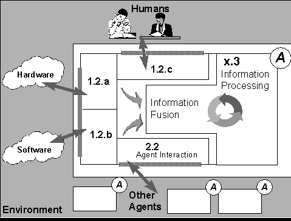
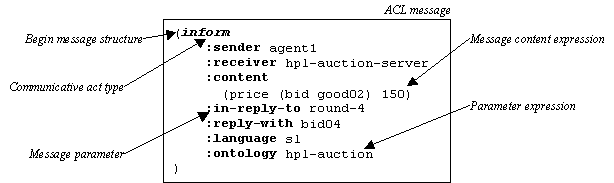
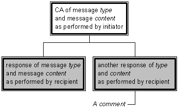
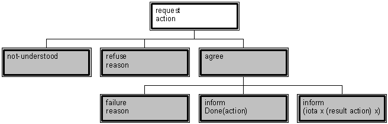
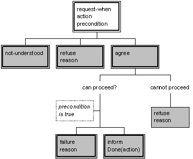
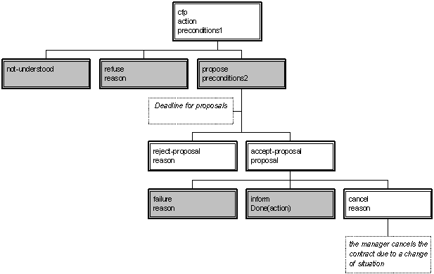
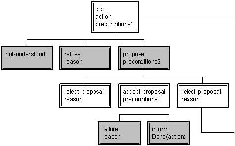
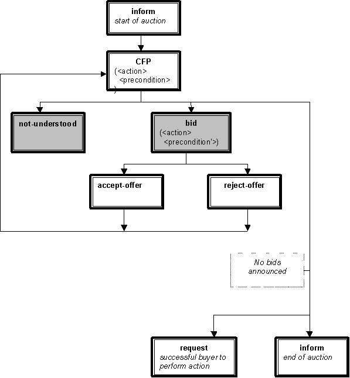
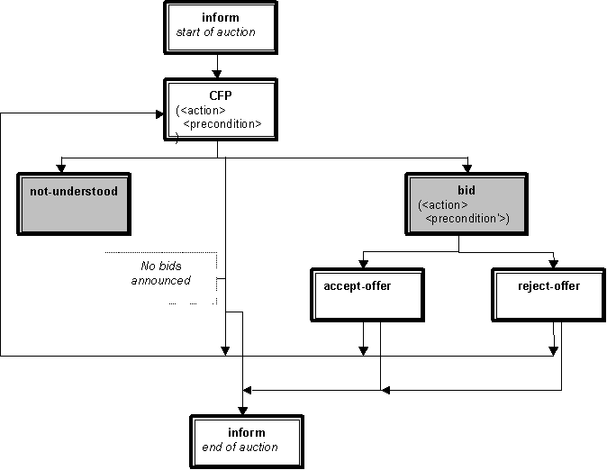
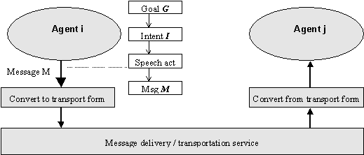

FOUNDATION FOR INTELLIGENT PHYSICAL AGENTS
FIPA 97 Specification, Version 2.0
1.1
Part 2
Obsolete
Publication date: 23rd October, 199828th
November, 1997
Copyright © 1997,1998 by FIPA - Foundation for Intelligent Physical Agents
Geneva, Switzerland
This is one part of thea revised version interim
update of the FIPA 97 Sspecifications as releasedproduced
in October 1997.
FIPA plans to produce a revision of the FIPA 97
specification in October 1998.
The latest version of this document may be found on the FIPA
web site:
http://www.drogo.cselt.it/fipa.org
Comments and questions regarding this document and the
specification therein should be addressed to:
specsfipa97@fipa.orgnortel.co.uk
It
is planned to introduce a web-based mechanism for submitting comments to the
specifications.They will be attended to promptly, see
Please refer
to the FIPA web site for FIPA's latest policy and
procedure for dealing with issues regarding the specification.
Notice
Use of the technologies described in this specification may infringe patents, copyrights or other intellectual property rights of FIPA Members and non-members. Nothing in this specification should be construed as granting permission to use any of the technologies described. Anyone planning to make use of technology covered by the intellectual property rights of others should first obtain permission from the holder(s) of the rights. FIPA strongly encourages anyone implementing any part of this specification to determine first whether part(s) sought to be implemented are covered by the intellectual property of others, and, if so, to obtain appropriate licences or other permission from the holder(s) of such intellectual property prior to implementation. This FIPA '97 Specification is subject to change without notice. Neither FIPA nor any of its Members accept any responsibility whatsoever for damages or liability, direct or consequential, which may result from the use of this specification.
1 Scope......................................................................................................................................... 111
2 Normative references............................................................................................................... 211
3 Terms and definitions............................................................................................................... 333
4 Symbols (and abbreviated
terms)............................................................................................ 555
5 Overview of Inter-Agent
Communication................................................................................ 666
5.1 Introduction............................................................................................................................... 666
5.2 Message Transport Mechanisms............................................................................................ 777
6 FIPA ACL Messages............................................................................................................. 1099
6.1 Preamble................................................................................................................................. 1099
6.2 Requirements on agents......................................................................................................... 1099
6.3 Message structure.................................................................................................................. 111010
6.3.1 Overview of ACL messages................................................................................................... 111010
6.3.2 Message parameters.............................................................................................................. 121010
6.3.3 Message content.................................................................................................................... 131111
6.3.4 Representing the content of messages.................................................................................. 151212
6.3.5 Use of MIME for additional content
expression encoding.................................................. 151313
6.3.6 Primitive and composite
communicative acts........................................................................ 161313
6.4 Message syntax...................................................................................................................... 161313
6.4.1 Grammar rules for ACL message syntax.............................................................................. 171414
6.4.2 Notes on grammar rules......................................................................................................... 191515
6.5 Catalogue of Communicative Acts......................................................................................... 191616
6.5.1 Preliminary notes.................................................................................................................... 201717
6.5.2 accept-proposal....................................................................................................................... 221919
6.5.3 agree........................................................................................................................................ 232020
6.5.4 cancel....................................................................................................................................... 252121
6.5.5 cfp............................................................................................................................................ 262222
6.5.6 confirm..................................................................................................................................... 272323
6.5.7 disconfirm................................................................................................................................ 282424
6.5.8 failure...................................................................................................................................... 292525
6.5.9 inform...................................................................................................................................... 302626
6.5.10 inform-if (macro act)............................................................................................................... 312727
6.5.11 inform-ref (macro act)............................................................................................................. 322828
6.5.12 not-understood........................................................................................................................ 332929
6.5.13 propose.................................................................................................................................... 343030
6.5.14 query-if.................................................................................................................................... 353131
6.5.15 query-ref.................................................................................................................................. 363232
6.5.16 refuse....................................................................................................................................... 373333
6.5.17 reject-proposal........................................................................................................................ 383434
6.5.18 request..................................................................................................................................... 393535
6.5.19 request-when........................................................................................................................... 403636
6.5.20 request-whenever................................................................................................................... 413737
6.5.21 subscribe................................................................................................................................. 433939
7 Interaction Protocols.............................................................................................................. 444040
7.1 Specifying when a protocol is in
operation............................................................................ 444040
7.2 Protocol Description Notation................................................................................................ 444040
7.3 Defined protocols.................................................................................................................... 454141
7.3.1 Failure to understand a response
during a protocol.............................................................. 454141
7.3.2 FIPA-request Protocol............................................................................................................ 454141
7.3.3 FIPA-query Protocol............................................................................................................... 464141
7.3.4 FIPA-request-when Protocol.................................................................................................. 464242
7.3.5 FIPA-contract-net Protocol.................................................................................................... 474242
7.3.6 FIPA-Iterated-Contract-Net Protocol.................................................................................... 484343
7.3.7 FIPA-Auction-English Protocol.............................................................................................. 484444
7.3.8 FIPA-Auction-Dutch Protocol................................................................................................ 494545
8 Formal basis of ACL semantics............................................................................................. 514747
8.1 Introduction to formal model.................................................................................................. 514747
8.2 The SL Language................................................................................................................... 524848
8.2.1 Basis of the SL formalism...................................................................................................... 524848
8.2.2 Abbreviations.......................................................................................................................... 534848
8.3 Underlying Semantic Model................................................................................................... 534949
8.3.1 Property 1................................................................................................................................ 544949
8.3.2 Property 2................................................................................................................................ 544949
8.3.3 Property 3................................................................................................................................ 544949
8.3.4 Property 4................................................................................................................................ 545050
8.3.5 Property 5................................................................................................................................ 555050
8.4 Notation................................................................................................................................... 555050
8.5 Primitive Communicative Acts............................................................................................... 555050
8.5.1 The assertive Inform.............................................................................................................. 555050
8.5.2 The directive Request............................................................................................................ 555151
8.5.3 Confirming an uncertain proposition:
Confirm...................................................................... 565151
8.5.4 Contradicting knowledge: Disconfirm................................................................................... 565151
8.6 Composite Communicative Acts............................................................................................ 565151
8.6.1 The closed-question case....................................................................................................... 575252
8.6.2 The query-if act:..................................................................................................................... 585353
8.6.3 The confirm/disconfirm-question act:.................................................................................... 585353
8.6.4 The open-question case:......................................................................................................... 585353
8.6.5 Summary definitions for all standard
communicative acts................................................... 595454
8.7 Inter-agent Communication Plans.......................................................................................... 615858
9 References.............................................................................................................................. 615959
Annex A (informative) ACL
Conventions and Examples........................................................................ 616060
A.1 Conventions........................................................................................................................................ 616060
A.1.1 Conversations
amongst multiple parties in agent communities.................................................... 616060
A.1.2 Maintaining threads
of conversation............................................................................................. 616060
A.1.3 Initiating
sub-conversations within protocols................................................................................ 616161
A.1.4 Negotiating by
exchange of goals.................................................................................................. 616161
A.2 Additional examples........................................................................................................................... 616161
A.2.1 Actions and results.......................................................................................................................... 616161
Annex B (informative) SL as
a Content Language.................................................................................. 616363
B.1 Grammar for SL
concrete syntax..................................................................................................... 616363
B.1.1 Lexical definitions........................................................................................................................... 616464
B.2 Notes on SL content
language semantics......................................................................................... 616464
B.2.1 Grammar entry point:
SL content expression............................................................................... 616464
B.2.2 SL Well-formed
formula (SLWff)................................................................................................... 616464
B.2.3 SL Atomic Formula......................................................................................................................... 616565
B.2.4 SL Term........................................................................................................................................... 616565
B.2.5 Result predicate.............................................................................................................................. 616666
B.2.6 Actions and action
expressions...................................................................................................... 616666
B.2.7 Agent identifier............................................................................................................................... 616666
B.2.8 Numerical Constants...................................................................................................................... 616666
B.3 Reduced expressivity
subsets of SL................................................................................................. 616666
B.3.1 SL0: minimal subset
of SL.............................................................................................................. 616666
B.3.2 SL1: propositional
form.................................................................................................................. 616767
B.3.3 SL2: restrictions
for decidability.................................................................................................... 616767
Annex C (informative) Relationship of ACL to KQML.......................................................................... 616969
C.1 Primary similarities and
differences.................................................................................................. 616969
C.2 Correspondence between KQML
message performatives and FIPA CA's.................................... 616969
C.2.1 Agent management
primitives......................................................................................................... 616969
C.2.2 Communications management......................................................................................................... 617070
C.2.3 Managing multiple
solutions........................................................................................................... 617070
C.2.4 Other discourse
performatives........................................................................................................ 617070
Annex D (informative) MIME-encoding to extend content descriptions............................................... 617171
D.1 Extension of FIPA ACL to
include MIME headers......................................................................... 617171
D.2 Example............................................................................................................................................... 617171
The Foundation for Intelligent Physical Agents (FIPA) is a non-profit association registered in Geneva, Switzerland. FIPA’s purpose is to promote the success of emerging agent-based applications, services and equipment. This goal is pursued by making available in a timely manner, internationally agreed specifications that maximise interoperability across agent-based applications, services and equipment. This is realised through the open international collaboration of member organisations, which are companies and universities active in the agent field. FIPA intends to make the results of its activities available to all interested parties and to contribute the results of its activities to appropriate formal standards bodies.
This specification has been developed through direct involvement of the FIPA membership. The 35 corporate members of FIPA (October 1997) represent 12 countries from all over the world
Membership in FIPA is open to any corporation and individual firm, partnership, governmental body or international organisation without restriction. By joining FIPA each Member declares himself individually and collectively committed to open competition in the development of agent-based applications, services and equipment. Associate Member status is usually chosen by those entities who do want to be members of FIPA without using the right to influence the precise content of the specifications through voting.
The Members are not restricted in any way from designing, developing, marketing and/or procuring agent-based applications, services and equipment. Members are not bound to implement or use specific agent-based standards, recommendations and FIPA specifications by virtue of their participation in FIPA.
This specification is published as FIPA 97 ver. 1.0 after two previous versions have been subject to public comments following disclosure on the WWW. It has undergone intense review by members as well non-members. FIPA is now starting a validation phase by encouraging its members to carry out field trials that are based on this specification. During 1998 FIPA will publish FIPA 97 ver. 2.0 that will incorporate whatever adaptations will be deemed necessary to take into account the results of field trials.
This FIPA 97 specification is the first output of the Foundation for Intelligent Physical Agents. It provides specification of basic agent technologies that can be integrated by agent systems developers to make complex systems with a high degree of interoperability.
FIPA specifies the interfaces of the different components in the environment with which an agent can interact, i.e. humans, other agents, non-agent software and the physical world. See figure below

FIPA produces two kinds of specification:
¾ normative specifications that mandate the external behaviour of an agent and ensure interoperability with other FIPA-specified subsystems;
¾ informative specifications of applications for guidance to industry on the use of FIPA technologies.
The first set of specifications – called FIPA 97 – has seven parts:
¾ three normative parts for basic agent technologies: agent management, agent communication language and agent/software integration
¾ four informative application descriptions that provide examples of how the normative items can be applied: personal travel assistance, personal assistant, audio-visual entertainment and broadcasting and network management and provisioning.
Overall, the three FIPA 97 technologies allow:
¾ the construction and management of an agent system composed of different agents, possibly built by different developers;
¾ agents to communicate and interact with each other to achieve individual or common goals;
¾ legacy software or new non-agent software systems to be used by agents.
A brief illustration of FIPA 97 specification is given below
Part 1 Agent Management
This part of FIPA 97 provides a normative framework within which FIPA compliant agents can exist, operate and be managed.
It defines an agent platform reference model containing such capabilities as white and yellow pages, message routing and life-cycle management. True to the FIPA approach, these capablities are themselves intelligent agents using formally sound communicative acts based on special message sets. An appropriate ontology and content language allows agents to discover each other’s capabilities.
Part 2 Agent Communication Language
The FIPA Agent Communication Language (ACL) is based on speech act theory: messages are actions, or communicative acts, as they are intended to perform some action by virtue of being sent. The specification consists of a set of message types and the description of their pragmatics, that is the effects on the mental attitudes of the sender and receiver agents. Every communicative act is described with both a narrative form and a formal semantics based on modal logic.
The specifications include guidance to users who are already familiar with KQML in order to facilitate migration to the FIPA ACL.
The specification also provides the normative description of a set of high-level interaction protocols, including requesting an action, contract net and several kinds of auctions etc.
Part 3 Agent/Software Integration
This part applies to any other non-agentised software with which agents need to “connect”. Such software includes legacy software, conventional database systems, middleware for all manners of interaction including hardware drivers. Because in most significant applications, non-agentised software may dominate software agents, part 3 provides important normative statements. It suggests ways by which Agents may connect to software via “wrappers” including specifications of the wrapper ontology and the software dynamic registration mechanism. For this purpose, an Agent Resource Broker (ARB) service is defined which allows advertisement of non-agent services in the agent domain and management of their use by other agents, such as negotiation of parameters (e.g. cost and priority), authentication and permission.
Part 4 - Personal Travel Assistance
The travel industry involves many components such as content providers, brokers, and personalization services, typically from many different companies. In applying agents to this industry, various implementations from various vendors must interoperate and dynamically discover each other as different services come and go. Agents operating on behalf of their users can provide assistance in the pre-trip planning phase, as well as during the on-trip execution phase. A system supporting these services is called a PTA (Personal Travel Agent).
In order to accomplish this assistance, the PTA interacts with the user and with other agents, representing the available travel services. The agent system is responsible for the configuration and delivery - at the right time, cost, Quality of Service, and appropriate security and privacy measures - of trip planning and guidance services. It provides examples of agent technologies for both the hard requirements of travel such as airline, hotel, and car arrangements as well as the soft added-value services according to personal profiles, e.g. interests in sports, theatre, or other attractions and events.
Part 5 - Personal Assistant
One central class of intelligent agents is that of a personal assistant (PA). It is a software agent that acts semi-autonomously for and on behalf of a user, modelling the interests of the user and providing services to the user or other people and PAs as and when required. These services include managing a user's diary, filtering and sorting e-mail, managing the user's activities, locating and delivering (multimedia) information, and planning entertainment and travel. It is like a secretary, it accomplishes routine support tasks to allow the user to concentrate on the real job, it is unobtrusive but ready when needed, rich in knowledge about user and work. Some of the services may be provided by other agents (e.g. the PTA) or systems, the Personal Assistant acts as an interface between the user and these systems.
In the FIPA'97 test application, a Personal Assistant offers the user a unified, intelligent interface to the management of his personal meeting schedule. The PA is capable of setting up meetings with several participants, possibly involving travel for some of them. In this way FIPA is opening up a road for adding interoperability and agent capabilities to the already established
Part 6 - Audio/Video Entertainment & Broadcasting
An effective means of information filtering and retrieval, in particular for digital broadcasting networks, is of great importance because the selection and/or storage of one’s favourite choice from plenty of programs on offer can be very impractical. The information should be provided in a customised manner, to better suit the user’s personal preferences and the human interaction with the system should be as simple and intuitive as possible. Key functionalities such as profiling, filtering, retrieving, and interfacing can be made more effective and reliable by the use of agent technologies.
Overall, the application provides to the user an intelligent interface with new and improved functionalities for the negotiation, filtering, and retrieval of audio-visual information. This set of functionalities can be achieved by collaboration between a user agent and content/service provider agent.
Part 7 - Network management & provisioning
Across the world, numerous service providers emerge that combine service elements from different network providers in order to provide a single service to the end customer. The ultimate goal of all parties involved is to find the best deals available in terms of Quality of Service and cost. Intelligent Agent technology is promising in the sense that it will facilitate automatic negotiation of appropriate deals and configuration of services at different levels.
Part 7 of FIPA 1997 utilizes agent technology to provide dynamic Virtual Private Network (VPN) services where a user wants to set up a multi-media connection with several other users.
The service is delivered to the end customer using co-operating and negotiating specialized agents. Three types of agents are used that represent the interests of the different parties involved:
¾ The Personal Communications Agent (PCA) that represents the interests of the human users.
¾ The Service Provider Agent (SPA) that represents the interests of the Service Provider.
¾ The Network Provider Agent (NPA) that represents the interests of the Network Provider.
The service is established by the initiating user who requests the service from its PCA. The PCA negotiates in with available SPAs to obtain the best deal available. The SPA will in turn negotiate with the NPAs to obtain the optimal solution and to configure the service at network level. Both SPA and NPA communicate with underlying service- and network management systems to configure the underlying networks for the service.
“Language is a very difficult thing to put into words” – Voltaire
This document forms part two of the FIPA 97 specification for interoperable agents and agent societies. In particular, this document lays out underlying principles and detailed requirements for agents to be able to communicate with each other using messages representing communicative acts, independently of the specific agent implementations.
The document lays out, in the sections below, the following:
¾ A core set of communicative acts, their meaning and means of composition;
¾ Common patterns of usage of these communicative acts, including standard composite messages, and standard or commonly used interaction protocols;
¾ A detailed semantic description of the underlying meaning of the core set of message primitives;
¾ A summary of the relationship between the FIPA ACL and widely used de facto standard agent communication language KQML.
This document is intended to be directly of use to designers, developers and systems architects attempting to design, build and test agent applications, particularly communities of multiple agents. It aims to lay out clearly the practical components of inter-agent communication and co-operation, and explain the underlying theory. Beyond a basic appreciation of the model of agent communication, readers can make practical use of the ACL specification without necessarily absorbing the detail of the formal basis of the language.
However, the language does have a well-defined formal semantic foundation. The intention of this semantics is that it both gives a deeper understanding of the meaning of the language to the formally inclined, and provides an unambiguous reference point. This will be of increasing importance as agents, independently developed by separate individuals and teams, attempt to inter-operate successfully.
This part of the FIPA 97 specification defines a language and supporting tools, such as protocols, to be used by intelligent software agents to communicate with each other. The technology of software agents imposes a high-level view of such agents, deriving much of its inspiration from social interaction in other contexts, such as human-to-human communication. Therefore, the terms used and the mechanisms used support such a higher-level, often task based, view of interaction and communication. The specification does not attempt to define the low and intermediate level services often associated with communication between distributed software systems, such as network protocols, transport services, etc. Indeed, the existence of such services used to physically convey the byte sequences comprising the inter-agent communication acts are assumed.
No single, universal definition of a software agent exists, nor does this specification attempt to define one. However, some characteristics of agent behaviour are commonly adopted, and the communication language defined in this specification sets out to support and facilitate these behaviours. Such characteristics include, but are not limited to:
¾ Goal directed behaviour;
¾ Autonomous determination of courses of action;
¾ Interaction by negotiation and delegation;
¾ Modelling of anthropomorphic mental attitudes, such as beliefs, intentions, desires, plans and commitments;
¾ Flexibility in responding to situations and needs.
No expectation is held that any given agent will necessarily embody any or all of these characteristics. However, it is the intention of this part of the specification that such behaviours are supported by the communication language and its supporting framework where appropriate.
Note on conformance to the underlying semantic model
The semantic model described in this document is given solely as an informative reference point for agent behaviour, as there is currently no agreed technology for compliance testing against the semantics of the epistemic operators used in the model. This is due to the difficulty of verifying that the mental attitudes of an agent conform to the specification, without dictating the agent's internal architecture or underlying implementation model. As such, the semantics cannot be considered normative until the issue of compliance testing is resolved. Such tests will be the subject of further FIPA work.
The following normative documents contain provisions which, through reference in this text, constitute provisions of this specification. For dated references, subsequent amendments to, or revisions of, any of these publications do not apply. However, parties to agreements based on this specification are encouraged to investigate the possibility of applying the most recent editions of the normative documents indicated below. For undated references, the latest edition of the normative document referred to applies. Members of ISO and IEC maintain registers of currently valid specifications.
ISO/IEC 2022: Information technology - Character code.
FIPA 97 specification – Part 1: Agent Management.
FIPA 97 specification – Part 3: Agent/Software Integration.
For the purposes of this specification, the following terms and definitions apply:
Action
A basic construct which represents some activity which an agent may perform. A special class of actions is the communicative acts.
ARB Agent
An agent which provides the Agent Resource Broker (ARB) service. There must be at least one such an agent in each Agent Platform in order to allow the sharing of non-agent services.
Agent
An Agent is the fundamental actor in a domain. It combines one or more service capabilities into a unified and integrated execution model which can include access to external software, human users and communication facilities.
Agent Communication Language (ACL)
A language with precisely defined syntax, semantics and pragmatics that is the basis of communication between independently designed and developed software agents. ACL is the primary subject of this part of the FIPA specification.
Agent Communication Channel (ACC) Router
The Agent Communication Channel is an agent which uses information provided by the Agent Management System to route messages between agents within the platform and to agents resident on other platforms.
Agent Management System (AMS)
The Agent Management System is an agent which manages the creation, deletion, suspension, resumption, authentication and migration of agents on the agent platform and provides a “white pages” directory service for all agents resident on an agent platform. It stores the mapping between globally unique agent names (or GUID) and local transport addresses used by the platform.
Agent Platform (AP)
An Agent Platform provides an infrastructure in which agents can be deployed. An agent must be registered on a platform in order to interact with other agents on that platform or indeed other platforms. An AP consists of three capability sets ACC, AMS and default Directory Facilitator.
Communicative Act (CA)
A special class of actions that correspond to the basic building blocks of dialogue between agents. A communicative act has a well-defined, declarative meaning independent of the content of any given act. CA's are modelled on speech act theory. Pragmatically, CA's are performed by an agent sending a message to another agent, using the message format described in this specification.
Content
That part of a communicative act which represents the domain dependent component of the communication. Note that "the content of a message" does not refer to "everything within the message, including the delimiters", as it does in some languages, but rather specifically to the domain specific component. In the ACL semantic model, a content expression may be composed from propositions, actions or IRE's.
Conversation
An ongoing sequence of communicative acts exchanged between two (or more) agents relating to some ongoing topic of discourse. A conversation may (perhaps implicitly) accumulate context which is used to determine the meaning of later messages in the conversation.
Software System
A software entity which is not conformant to the FIPA Agent Management specification.
CORBA
Common Object Request Broker Architecture, an established standard allowing object-oriented distributed systems to communicate through the remote invocation of object methods.
Directory Facilitator (DF)
The Directory facilitator is an agent which provides a “yellow pages” directory service for the agents. It stores descriptions of the agents and the services they offer.
Feasibility Precondition (FP)
The conditions (i.e. one or more propositions) which need be true before an agent can (plan to) execute an action.
Illocutionary effect
See speech act theory.
Knowledge Querying and Manipulation Language (KQML)
A de facto (but widely used) specification of a language for inter-agent communication. In practice, several implementations and variations exist.
Local Agent Platform
The Local Agent Platform is the AP to which an agent is attached and which represents an ultimate destination for messages directed to that agent.
Message
An individual unit of communication between two or more agents. A message corresponds to a communicative act, in the sense that a message encodes the communicative act for reliable transmission between agents. Note that communicative acts can be recursively composed, so while the outermost act is directly encoded by the message, taken as a whole a given message may represent multiple individual communicative acts.
Message content
See content.
Message transport service
The message transport service is an abstract service provided by the agent management platform to which the agent is (currently) attached. The message transport service provides for the reliable and timely delivery of messages to their destination agents, and also provides a mapping from agent logical names to physical transport addresses.
Ontology
An ontology gives meanings to symbols and expressions within a given domain language. In order for a message from one agent to be properly understood by another, the agents must ascribe the same meaning to the constants used in the message. The ontology performs the function of mapping a given constant to some well-understood meaning. For a given domain, the ontology may be an explicit construct or implicitly encoded with the implementation of the agent.
Ontology sharing problem
The problem of ensuring that two agents who wish to converse do, in fact, share a common ontology for the domain of discourse. Minimally, agents should be able to discover whether or not they share a mutual understanding of the domain constants. Some research work is addressing the problem of dynamically updating agents' ontologies as the need arises. This specification makes no provision for dynamically sharing or updating ontologies.
Perlocutionary Effect
See speech act theory.
Proposition
A statement which can be either true or false. A closed proposition is one which contains no variables, other than those defined within the scope of a quantifier.
Protocol
A common pattern of conversations used to perform some generally useful task. The protocol is often used to facilitate a simplification of the computational machinery needed to support a given dialogue task between two agents. Throughout this document, we reserve protocol to refer to dialogue patterns between agents, and networking protocol to refer to underlying transport mechanisms such as TCP/IP.
Rational Effect (RE)
The rational effect of an action is a representation of the effect that an agent can expect to occur as a result of the action being performed. In particular, the rational effect of a communicative act is the perlocutionary effect an agent can expect the CA to have on a recipient agent.
Note that the recipient is not bound to ensure that the expected effect comes about; indeed it may be impossible for it to do so. Thus an agent may use its knowledge of the rational effect in order to plan an action, but it is not entitled to believe that the rational effect necessarily holds having performed the act.
Speech Act Theory
A theory of communications which is used as the basis for ACL. Speech act theory is derived from the linguistic analysis of human communication. It is based on the idea that with language the speaker not only makes statements, but also performs actions. A speech act can be put in a stylised form that begins "I hereby request …" or "I hereby declare …". In this form the verb is called the performative, since saying it makes it so. Verbs that cannot be put into this form are not speech acts, for example "I hereby solve this equation" does not actually solve the equation. [Austin 62, Searle 69].
In speech act theory, communicative acts are decomposed into locutionary, illocutionary and perlocutionary acts. Locutionary acts refers to the formulation of an utterance, illocutionary refers to a categorisation of the utterance from the speakers perspective (e.g. question, command, query, etc), and perlocutionary refers to the other intended effects on the hearer. In the case of the ACL, the perlocutionary effect refers to the updating of the agent's mental attitudes.
Software Service
An instantiation of a connection to a software system.
TCP/IP
A networking protocol used to establish connections and transmit data between hosts
Wrapper Agent
An agent which provides the FIPA-WRAPPER service to an agent domain on the Internet.
ACC: Agent Communication Channel
ACL: Agent Communication Language
AMS: Agent Management System
AP: Agent Platform
API: Application Programming Interface
ARB: Agent Resource Broker
CA: Communicative Act
CORBA: Common Object Request Broker Architecture
DCOM: Distributed COM
DF: Directory Facilitator
FIPA: Foundation for Intelligent Physical Agents
FP: Feasibility Precondition
GUID: Global Unique Identifier
HAP: Home Agent Platform
HTTP: Hypertext Transmission Protocol
IDL: Interface Definition Language
IIOP: Internet Inter-ORB Protocol
OMG: Object Management Group
ORB: Object Request Broker
RE: Rational Effect
RMI: Remote Method Invocation, an inter-process communication method embodied in Java
SL: Semantic Language
SMTP: Simple Mail Transfer Protocol
TCP / IP: Transmission Control Protocol / Internet Protocol
This specification document does not define in a precise, prescriptive way what an agent is nor how it should be implemented. Besides the lack of a general consensus on this issue in the agent research community, such definitions frequently fall into the trap of being overly restrictive, ruling out some software constructs whose developers legitimately consider to be agents, or else overly weak and of little assistance to the reader or software developer. A goal of this specification is to be as widely applicable as possible, so the stance taken is to define the components as precisely as possible, and allow applicability in any particular instance to be decided by the reader.
Nevertheless, some position must be taken on some of the characteristics of an agent, that it, on what an agent can do, in order that the specification can specify a means of doing it. This position is outlined here, and consists of an abstract characterisation of agent properties, and a simple abstract model of inter-agent communication.
The first characteristic assumed is that agents are communicating at a higher level of discourse, i.e. that the contents of the communication are meaningful statements about the agents' environment or knowledge. This is one characteristic that differentiates agent communication from, for example, other interactions between strongly encapsulated computational entities such as method invocation in CORBA.
In order for this discourse to be given meaning, some assumptions have to be made about the agents. In this specification, an abstract characterisation of agents is assumed, in which some core capabilities of agents are described in terms of the agent's mental attitudes. This characterisation or model is intended as an abstract specification, i.e. it does not pre-determine any particular agent implementation model nor a cognitive architecture.
More specifically, this specification characterises an agent as being able to be described as though it has mental attitudes of:
¾ Belief, which denotes the set of propositions (statements which can be true or false) which the agent accepts are (currently) true; propositions which are believed false are represented by believing the negation of the proposition.
¾ Uncertainty, which denotes the set of propositions which the agent accepts are (currently) not known to be certainly true or false, but which are held to be more likely to be true than false; propositions which are uncertain but more likely to be false are represented by being uncertain of the negation of the proposition. Note that this attitude does not prevent an agent from adopting a specific uncertain information formalism, such as probability theory, in which a proposition is believed to have a certain degree of support. Rather the uncertainty attitude provides a least commitment mechanism for agents with differing representation schemes to discuss uncertain information.
¾ Intention, which denotes a choice, or property or set of properties of the world which the agent desires to be true and which are not currently believed to be true. An agent which adopts an intention will form a plan of action to bring about the state of the world indicated by its choice.
Note that, with respect to some given proposition p, the attitudes of believing p, believing not p, being uncertain of p and being uncertain of not p are mutually exclusive.
In addition, agents understand and are able to perform certain actions. In a distributed system, an agent typically will only be able to fulfil its intentions by influencing other agents to perform actions.
Influencing the actions of other agents is performed by a special class of actions, denoted communicative acts. A communicative act is performed by one agent towards another. The mechanism of performing a communicative act is precisely that of sending a message encoding the act. Hence the roles of initiator and recipient of the communicative act are frequently denoted as the sender and receiver of the message, respectively.
Building from a well-defined core, the messages defined in this specification represent a set of communicative acts that attempt to seek a balance between generality, expressive power and simplicity, together with perspicuity to the agent developer. The message type defines the communicative action that is being performed. Together with the appropriate domain knowledge, the communicative act allows the receiver to determine the meaning of the contents of the message.
The meanings of the
communicative acts given in §06.5 Catalogue of
Communicative Acts6.5 Catalogue of
Communicative Acts are given in terms of the pre-conditions in respect
to the sender's mental attitudes, and the expected (from the sender's point of
view) consequences on the receiver's mental attitudes. However, since the
sender and receiver are independent, there is no guarantee that the expected
consequences come to pass. For example, agent i may believe that "it is better to read books than to watch
TV", and may intend j to come to
believe so also. Agent i will, in the ACL, inform
j of its belief in the truth of that
statement. Agent j will then know,
from the semantics of inform, that i intends it to believe in the value of
books, but whether j comes itself to
believe the proposition is a matter for j
alone to decide.
This specification concerns itself with inter-agent communication through message passing. Key sections of the discussion are as follows:
¾
§05.2 Message
Transport Mechanisms5.2 Message Transport Mechanisms discusses the transportation
of messages between agents;
¾
§06.3 Message
structure6.3 Message
structure introduces the structure of
messages;
¾
§06.4 Message
syntax6.4 Message
syntax gives a standard transport
syntax for transmitting ACL messages over simple byte streams;
¾
§06.5 Catalogue
of Communicative Acts6.5 Catalogue of Communicative Acts catalogues the standardised
communicative acts and their representation as messages;
¾
§0Interaction ProtocolsInteraction
Protocols introduces and defines a set
of communication protocols to simplify certain common sequences of messages;
¾
§0Formal basis of ACL
semanticsFormal basis of ACL semantics formally defines the
underlying communication model.
For two agents to communicate with each other by exchanging messages, they must have some common meeting point through which the messages are delivered. The existence and properties of this message transport service are the remit of FIPA Technical Committee 1: Agent Management.
The ACL presented here takes as a position that the contribution of agent technology to complex system behaviour and inter-operation is most powerfully expressed at what, for the lack of a better term, may be called the higher levels of interaction. For example, this document describes communicative acts for informing about believed truths, requesting complex actions, protocols for negotiation, etc. The interaction mechanisms presented here do not compete with, nor should they be compared to, low-level networking protocols such as TCP/IP, the OSI seven layer model, etc. Nor do they directly present an alternative to CORBA, Java RMI or Unix RPC mechanisms. However, the functionality of ACL does, in many ways overlap with the foregoing examples, not least in that ACL messages may often be expected to be delivered via such mechanisms.
The ACL’s role may be further clarified by consideration of the FIPA goal of general open agent systems. Other mechanisms, notably CORBA, share this goal, but do so by imposing certain restrictions on the interfaces exposed by objects. History suggests that agents and agent systems are typically implemented with a greater variety of interface mechanisms; existing example agents include those using TCP/IP sockets, HTTP, SMTP and GSM short messages. ACL respects this diversity by attempting to minimise requirements on the message delivery service. Notably, the minimal message transport mechanism is defined as a textual form delivered over a simple byte stream, which is also the approach taken by the widely used KQML agent communication language. A potential penalty for this inclusive approach is upon very high-performance systems, where message throughput is pre-eminent. Future versions of this specification may define alternative transport mechanism assumptions, including other transport syntaxes, which meet the needs of very high performance systems.
Currently, the ACL imposes a minimal set of requirements on the message transport service, as shown below:
a) The message service is able to deliver a message, encoded in the transport form below, to a destination as a sequence of bytes. The message service exposes through its interface whether it is able to cope reliably with 8-bit bytes whose high-order bit may be set.
b) The normal case is that the message service is reliable (well-formed messages will arrive at the destination) accurate (the message is received in the form in which it was sent), and orderly (messages from agent a to agent b arrive at b in the order in which they were sent from a[1]). Unless informed otherwise, an agent is entitled to assume that these properties hold.
c) If the message delivery service is unable to guarantee any or all of the above properties, this fact is exposed in some way through the interface to the message delivery service
d) An agent will have the option of selecting whether it suspends and waits for the result of a message (synchronous processing) or continues with other unrelated tasks while waiting for a message reply (asynchronous processing). The availability of this behaviour will be implementation specific, but it must be made explicit where either behaviour is not supported.
e) Parameters of the act of delivering a message, such as time-out if no reply, are not codified at the message level but are part of the interface exposed by the message delivery service.
f) The message delivery service will detect and report error conditions, such as: ill-formed message, undeliverable, unreachable agent, etc., back to the sending agent. Depending on the error condition, this may be returned either as a return value from the message sending interface, or through the delivery of an appropriate error message.
g) An agent has a name which will allow the message delivery service to deliver the message to the correct destination. The message delivery service will be able to determine the correct transport mechanism (TCP/IP, SMTP, http, etc.), and will allow for changes in agent location, as necessary.
The agent will, in some implementation specific way, have an structure which corresponds to a message it wishes to send or has received. The syntax shown below in this document defines a transport form, in which the message is mapped from its internal form to a character sequence, and can be mapped back to the internal message form from a given character sequence. Note again the absence of architectural commitment: the internal message form may be a explicit data structure, or it may be implicit in the way that the agent handles its messages.
For the purposes of the transport services, the message may be assumed to be an opaque byte stream, with the exception that it is possible to extract the destination of the message.
At this transport level, messages are assumed to be encoded in 7-bit characters according to the ISO/IEC 2022 standard. This specification allows the expression of characters in extended character sets, such as Japanese. The FIPA specification adopts the position that the default character mapping is US ASCII. More specifically, all ACL compliant agents should assume that, when communication is commenced:
¾ ISO/IEC 646 (US ASCII) is designated to G0;
¾ ISO/IEC 6429 C0 is designated;
¾ G0 is invoked in GL;
¾ C0 is invoked in CL;
¾ SPACE in 2/0 (0x20) and
¾ DELETE in 7/15 (0x7f)
Some transport services will be able to transport 8-bit characters safely, and, where this service is available, the agent is free to make use of it. However, safe transmission of 8-bit characters is not universally assumed.
This section defines the individual message types that are central to the ACL specification. In particular, the form of the messages and meaning of the message types are defined. The message types are a reference to the semantic acts defined in this specification. These types impart a meaning to the whole message, that is, the act and the content of the message, which extends any intrinsic meaning that the content itself may have.
For example, if i informs j that “Bonn is in Germany”, the content of the message from i to j is “Bonn is in Germany”, and the act is the act of informing. “Bonn is in Germany” has a certain meaning, and is true under any reasonable interpretation of the symbols “Bonn” and “Germany”, but the meaning of the message includes effects on (the mental attitudes of) agents i and j. The determination of this effect is essentially a private matter to both i and j, but for meaningful communication to take place, some reasonable expectations of those effects must be fulfilled.
Clearly, the content of a message may range over an unrestricted range of domains. This specification does not mandate any one formalism for representing message content. Agents themselves must arrange to be able to interpret any given message content correctly. Note that this version of the specification does not address the ontology sharing problem, though future versions may do so. The specification does set out to specify the meanings of the acts independently of the content, that is, extending the above example, what it means to inform or be informed. In particular, a set of standard communicative acts and their meanings is defined.
It may be noted, however, that there is a trade-off between the power and specificity of the acts. Notionally, a large number of very specific act types, which convey nuances of meaning, can be considered equivalent to a smaller number of more general ones, but they place different representational and implementation constraints on the agents. The goals of the set of acts presented here are (i) to cover, overall, a wide range of communication situations, (ii) not to overtax the design of simpler agents intended to fulfil a specific, well-defined purpose, and (iii) to minimise redundancy and ambiguity, to facilitate the agent to choose which communicative act to employ. Succinctly, the goals are: completeness, simplicity and conciseness.
The fundamental view of messages in ACL is that a message represents a communicative act. For purposes of elegance and coherency, the treatment of communicative acts during dialogue should be consistent with the treatment of other actions; a given communicative action is just one of the actions that an agent can perform. The term message then plays two distinct roles within this document, depending on context. Message can be a synonym for communicative act, or it may refer to the computational structure used by the message delivery service to convey the agent's utterance to its destination.
The communication language presented in this
specification is based on a precise formal semantics, giving an unambiguous
meaning to communicative actions. In practice, this formal basis is
supplemented with pragmatic extensions that serve to ease the practical
implementation of effective inter-agent communications. For this reason, the
message parameters defined below are
not defined in the formal semantics in §0Formal basis of ACL
semanticsFormal basis of ACL semantics, but are defined in narrative form in the sections
below. Similarly, conventions that agents are expected to adopt, such as
protocol of message exchange, are given an operational semantics in narrative
form only.
This document introduces a set of pre-defined message types and protocols that are available for all agents to use. However, it is not required for all agents to implement all of these messages. In particular, the minimal requirements on FIPA ACL compliant agents are as follows:
|
Requirement 1 |
|
Requirement 2 |
|
Requirement 3 |
|
Requirement 4: |
|
Requirement 5:
|
This section introduces the various structural elements of a message.
The following figure summarises the main structural elements of an ACL message:
Figure 111 — Components
of a message
|
 |
In their transport form, messages are represented as s-expressions. The first element of the message is a word which identifies the communicative act being communicated, which defines the principal meaning of the message. There then follows a sequence of message parameters, introduced by parameter keywords beginning with a colon character. No space appears between the colon and the parameter keyword. One of the parameters contains the content of the message, encoded as an expression in some formalism (see below). Other parameters help the message transport service to deliver the message correctly (e.g. sender and receiver), help the receiver to interpret the meaning of the message (e.g. language and ontology), or help the receiver to respond co-operatively (e.g. reply-with, reply-by).
It is this transport form that is serialised as a byte stream and transmitted by the message transport service. The receiving agent is then responsible for decoding the byte stream, parsing the components message and processing it correctly.
Note that the message's communicative act type corresponds to that which in KQML is called the performative[2]).
As noted above, the message contains a set of one or more parameters. Parameters may occur in any order in the message. The only parameter that is mandatory in all messages is the :receiver parameter, so that the message delivery service can correctly deliver the message. Clearly, no useful message will contain only the receiver. However, precisely which other parameters are needed for effective communication will vary according to the situation.
The full set of pre-defined message parameters is shown in the following table:
Table 111 — Pre-defined
message parameters
|
Message Parameter: |
Meaning: |
|
:sender |
Denotes the identity of the sender of the message, i.e. the name of the agent of the communicative act. |
|
:receiver |
Denotes the identity of the intended recipient of the message. Note that the recipient may be a single agent name, or a tuple of agent names. This corresponds to the action of multicasting the message. Pragmatically, the semantics of this multicast is that the message is sent to each agent named in the tuple, and that the sender intends each of them to be recipient of the CA encoded in the message. For example, if an agent performs an inform act with a tuple of three agents as receiver, it denotes that the sender intends each of these agent to come to believe the content of the message. |
|
:content |
Denotes the content of the message; equivalently denotes the object of the action. |
|
:reply-with |
Introduces an expression which will be used by the agent responding to this message to identify the original message. Can be used to follow a conversation thread in a situation where multiple dialogues occur simultaneously. E.g. if agent i sends to agent j a message which contains |
|
:in-reply-to |
Denotes an expression that references an earlier action to which this message is a reply. |
|
:envelope |
Denotes an expression that provides useful information about the message as seen by the message transport service. The content of this parameter is not defined in the specification, but may include time sent, time received, route, etc. The structure of the envelope is a list of keyword value pairs, each of which denotes some aspect of the message service. |
|
:language |
Denotes the encoding scheme of the content of the action. |
|
:ontology |
Denotes the ontology which is used to give a meaning to the symbols in the content expression. |
|
:reply-by |
Denotes a time and/or date expression which indicates a guideline on the latest time by which the sending agent would like a reply. |
|
:protocol |
Introduces an identifier which denotes the protocol which the sending agent is
employing. The protocol serves to give additional context for the
interpretation of the message. Protocols are discussed in §0 |
|
:conversation-id |
Introduces an expression which is used to identify an ongoing sequence of communicative acts which together form a conversation. A conversation may be used by an agent to manage its communication strategies and activities. In addition the conversation may provide additional context for the interpretation of the meaning of a message. |
The content of a message refers to whatever the communicative act applies to. If, in general terms, the communicative act is considered as a sentence, the content is the grammatical object of the sentence. In general, the content can be encoded in any language, and that language will be denoted by the :language parameter. The only requirement on the content language is that it has the following properties:
|
Requirement 6: |
¾
A proposition states that some sentence in a language is true or
false. An object, in this context, is
a construct which represents an identifiable "thing" (which may be
abstract or concrete) in the domain of discourse. Object in this context does
not necessarily refer to the specialised programming constructs that appear in object-oriented languages like C++ and
Java. An action is a construct that
the agent will interpret as being an activity which can be carried out by some
agent. In general, an action does not produce a result which is communicated to
another agent (but see, for example, §(iota <variable> <term>)
The iota operator introduces a scope for the given expression (which denotes a term), in which the given identifier, which would otherwise be
free, is defined. An expression containing a free variable is not a well-formed
SL expression. The expression "(iota x (P x)" may be read as
"the x such that P [is true] of x. The iota
operator is a constructor for terms which denote objects in the domain of
discourse.
¾B.2.5(iota <variable> <term>)
The iota operator introduces a scope for the given expression (which denotes a term), in which the given identifier, which would otherwise be
free, is defined. An expression containing a free variable is not a well-formed
SL expression. The expression "(iota x (P x)" may be read as
"the x such that P [is true] of x. The iota
operator is a constructor for terms which denote objects in the domain of
discourse.
¾B.2.5B.2.5(iota <variable> <term>)
The iota operator introduces a scope for the given expression
(which denotes a term), in which the given identifier, which would otherwise
be free, is defined. An expression containing a free variable is not a
well-formed SL expression. The expression "(iota x (P x)" may be read
as "the x such that P [is true] of x. The iota
operator is a constructor for terms which denote objects in the domain of discourse.
B.2.5B.2.5).
Except in the special case outlined below, there is no
requirement that message content languages conform to any well known
(pre-defined) syntax. In other words, it is the responsibility of the agents in a dialogue to ensure that they are
using a mutually comprehensible content language. This FIPA specification does
not mandate the use of any particular content language. One suggested content
language formalism is shown in Annex BAnnex BAnnex BAnnex
BAnnex B. There are many ways to ensure the use of a common
content language. It may be arranged by convention (e.g. such-and-such agents
are well known always to use Prolog), by negotiation[3]
among the parties, or by employing the services of an intermediary as a translator.
Similarly, the agents are responsible for ensuring that they are using a common
ontology.
The most general case is that of negotiating (i.e. jointly deciding) a content language. However, the agent must overcome the problem of being able to begin the conversation in the first place, in order that they can then negotiate content language. There has to be a common point of reference, known in advance to both parties. Thus, for the specific purpose of registering with a directory facilitator and performing other key agent management functions, the specification does include the following content language definition:
Definition 111:
The FIPA specification agent management content language is an s-expression
notation used to express the propositions, objects and actions pertaining to
the management of the agent's lifecycle. The terms in the expression are
defined operationally in part one of the FIPA 97 specification.
|
Requirement 7: |
As noted above, the content of a message refers to the domain expression which the communicative act refers to. It is encoded in the message as the value of the :content parameter. The FIPA specification does not mandate any particular content encoding language (i.e. the representation form of the :content expression) on a normative basis. The SL content language is provided in Annex B on an informative basis.
To facilitate the encoding of simple languages (that is, simple in their syntactic requirements), the s-expression form included in the ACL grammar shown below allows the construction of s-expressions of arbitrary depth and complexity. A language which is defined as a sub-grammar of the general s-expression grammar is therefore admissible as a legal ACL message without modification. The SL grammar shown in Annex B is an example of exactly this approach.
However, agents commonly need to embed in the body of the message an expression encoded in a notation other than the simple s-expression form used for the messages themselves. The ACL grammar provides two mechanisms, both of which avoid the problem of an ACL parser being required to parse any expression in any language:
¾ Wrap the expression in double quotes, thus making it a string in ACL syntax, and protect any embedded double quote in the embedded expression with a backslash. Note that backslash characters in the content expression must also be protected. E.g.:
(inform :content "owner( agent1, \"Ian\" ) "
:language Prolog
… )
¾ Prefix the expression with the appropriate length encoded string notation, thus ensuring that the expression will be treated as one lexical token irrespective of its structure. E.g.:
(inform :content #22"owner( agent1, "Ian" )
:language Prolog
… )
As a result, an ACL parser will generate one lexical token, a string, representing the entire embedded language expression. Once the message has been parsed, the token representing the content expression can be interpreted according to its encoding scheme, which will by then be known from the :language parameter.
Sometimes, even the mechanisms in the previous section are not flexible enough to represent the full range of types of expression available to an agent. An example may be when an agent wishes to express a concept such as “the sound you asked for is <a digitised sound>”. Alternatively, it may wish to express some content in a language or character set encoding different from that used for the description of the content, such as “the translation of error message <some English text> into Japanese is <some Japanese text>”.
The Multipurpose Internet Mail Extensions (MIME) standard was developed to address similar issues in the context of Internet mail messages [Freed & Borenstein 96]. The syntactic form of MIME headers is suited particularly to the format of mail messages, and is not congruent with the transport syntax defined for FIPA ACL messages. However, the capabilities provided by MIME, and in particular the now widely used notation for annotating content types is a capability of great value to some categories of agent. To allow for this, an agent may optionally be able to process MIME content expression descriptions as wrappers around a given expression, using an extension of the ACL message syntax.
It is not a mandatory part of this specification that all agents be able to process MIME content descriptions. However, MIME-capable agents can register this ability with their directory facilitator, and then proceed to use the format defined in Annex D.
Note that, for the specific task of encoding language specific character sets, the ISO 2022 standard which is the base level character encoding of the message stream is capable of supporting a full range of international character encodings.
This document defines a set of predefined communicative acts, each of which is given a specific meaning in the specification. Pragmatically, each of these communicative acts may be treated equivalently: they have equal status. However, in terms of definition and the determination of the formal meaning of the communicative acts, we distinguish two classes: primitive acts and composite acts.
Primitive communicative acts are those whose actions are defined atomically, i.e. they are not defined in terms of other acts. Composite communicative acts are the converse. Acts are composed by one of the following methods:
¾ making one communicative act the object of another. For example, "I request you to inform me whether it is raining" is the composite query-if act.
¾ using the composition operator “;” to sequence actions
¾ using the composition operator “|” to denote a non-deterministic choice of actions.
The sequencing operator is written as an infix semicolon. Thus the expression:
a ; b
denotes an action, whose meaning is that of action a followed by action b.
The non-deterministic choice operator is written as an infix vertical bar. Thus the expression:
a | b
denotes a macro action, whose meaning is that of either action a, or action b, but not both. The action may occur in the past, present or future, or not at all.
Note that a macro action must be treated
slightly differently than other communicative acts. A macro action can be
planned by an agent, and requested by one agent of another. However, a macro
act will not appear as the outermost (i.e. top-level) message being sent from
one agent to another. Macro acts are used in the definition of new composite
communicative acts. For example, see the inform-if
act in §0inform-if (macro act)inform-if
(macro act).
The definition of composite actions in this
way is part of the underlying semantic model for the ACL, defined using the
semantic description language SL. Action composition as described above is not
part of the concrete syntax for ACL. However, these operators are defined in
the concrete syntax for SL used as a content language in Annex BAnnex BAnnex BAnnex
BAnnex B.
This section defines the message transport syntax. The syntax is expressed in standard EBNF format. For completeness, the notation is as follows:
|
Grammar rule component |
Example |
|
Terminal tokens are enclosed in double quotes |
"(" |
|
Non terminals are written as capitalised identifiers |
Expression |
|
Square brackets denote an optional construct |
[ "," OptionalArg ] |
|
Vertical bar denotes an alternative |
Integer | Real |
|
Asterisk denotes zero or more repetitions of the preceding expression |
Digit * |
|
Plus denotes one or more repetitions of the preceding expression |
Alpha + |
|
Parentheses are used to group expansions. |
( A | B ) * |
|
Productions are written with the non-terminal name on the lhs, expansion on the rhs, and terminated by a full stop. |
ANonTerminal = "an expansion". |
Some slightly different rules apply for the generation of lexical tokens. Lexical tokens use the same notation as above, except:
|
Lexical rule component |
Example |
|
Square brackets enclose a character set |
["a", "b", "c"] |
|
Dash in a character set denotes a range |
["a" - "z"] |
|
Tilde denotes the complement of a character set if it is the first character |
[ ~ "(", ")"] |
|
Post-fix question-mark operator denotes that the preceding lexical expression is optional (may appear zero or one times) |
["0" - "9"]? ["0" - "9"] |
This section defines the grammar for ACL.
ACLCommunicativeAct = Message.
Message = "("
MessageType MessageParameter* ")".
MessageType =
"accept-proposal"
| "agree"
| "cancel"
| "cfp"
| "confirm"
| "disconfirm"
| "failure"
| "inform"
| "inform-if"
| "inform-ref"
| "not-understood"
| "propose"
| "query-if"
| "query-ref"
| "refuse"
| "reject-proposal"
| "request"
| "request-when"
| "request-whenever"
| "subscribe".
MessageParameter = ":sender"
AgentName
|
":receiver" RecipientExpr
|
":content" ( Expression | MIMEEnhancedExpression )
|
":reply-with" Expression
|
":reply-by" DateTimeToken
|
":in-reply-to" Expression
|
":envelope" KeyValuePairList
|
":language" Expression
|
":ontology" Expression
|
":protocol" Word
| ":conversation-id" Expression.
Expression = Word
| String
| Number
| "("
Expression * ")".
MIMEEnhancedExpression – optional
extension. See Annex D.
KeyValuePairList = "("
KeyValuePair * ")".
KeyValuePair = "(" Word
Expression ")".
RecipientExpr =
AgentName
| "("
AgentName + ")".
AgentName = Word
| Word "@"
URL.
URL = Word.
Lexical rules
Word
= [~ "\0x00" - "\0x20",
"(", ")", "#",
"0"-"9", "-", "@"]
[~
"\0x00" - "\0x20",
"(", ")"] *.
String
= StringLiteral
|
ByteLengthEncodedString.
StringLiteral =
"\""
( [~
"\"" ] | "\\\"" )*
"\"".
ByteLengthEncodedString = "#" ["0" -
"9"]+ "\""
<byte sequence>.
Number
= Integer | Float.
DateTimeToken = "+"
?
Year Month Day
"T"
Hour Minute
Second MilliSecond
(TypeDesignator
?).
Year = Digit Digit
Digit Digit.
Month = Digit Digit.
Day = Digit Digit.
Hour = Digit Digit.
Minute = Digit Digit.
Second = Digit Digit.
MilliSecond = Digit Digit
Digit.
TypeDesignator =
AlphaCharacter.
Digit = ["0"
– "9"].
a) The standard definitions for integers and floating point numbers are assumed.
b) All keywords are case-insensitive.
c) A length encoded string is a
context sensitive lexical token. Its meaning is as follows: the header of the
token is everything from the leading "#" to the separator "
inclusive. Between the markers of the header is a decimal number with at least
one digit. This digit then determines that exactly
that number of 8-bit bytes are to be consumed as part of the token, without
restriction. It is a lexical error for less than that number of bytes to be
available.
Note that not all implementations of the agent communication channel (ACC) [see
Part One of the FIPA 97 specification] will support the transparent
transmission of 8-bit characters. It is the responsibility of the agent to
ensure, by reference to the API provided for the ACC, that a given channel is
able to faithfully transmit the chosen message encoding.
d) A well-formed message will obey the grammar, and in addition, will have at most one of each of the parameters. It is an error to attempt to send a message which is not well formed. Further rules on well-formed messages may be stated or implied the operational definitions of the values of parameters as these are further developed.
e) Strings encoded in accordance with ISO/IEC 2022 may contain characters which are otherwise not permitted in the definition of Word. These characters are ESC (0x1B), SO (0x0E) and SI (0x0F). This is due to the complexity that would result from including the full ISO/IEC 2022 grammar in the above EBNF description. Hence, despite the basic description above, a word may contain any well-formed ISO/IEC 2022 encoded character, other (representations of) parentheses, spaces, or the “#” character. Note that parentheses may legitimately occur as part of a well formed escape sequence; the preceding restriction on characters in a word refers only to the encoded characters, not the form of the encoding.
f) Time tokens are based on
the ISO 8601 format, with extensions for relative time and millisecond
durations. Time expressions may be absolute, or relative to the current time.
Relative times are distinguished by the character "+" appearing as
the first character in the construct. If no type designator is given, the local
timezone is used. The type designator for UTC is the character "Z".
UTC is preferred to prevent timezone ambiguities. Note that years must be
encoded in four digits. As examples, 8:30 am on April 15th 1996
local time would be encoded as:
19960415T083000000
the same time in UTC would be:
19960415T083000000Z
while one hour, 15 minutes and 35 milliseconds from now would be:
+00000000T011500035.
g) The format defined for agent
names is taken from part one of the FIPA 97 standard. The option of simply
using a word as the agent name is only valid where that word can be
unambiguously resolved to an full agent name
in the format given. A well-formed URL has the standard form:
AccessTypeSpecifier "://" InternetAddress ":" PortNumber "/" Identifier
This specification is not included as a first-class production in the above
grammar due to context sensitivity, in other grammatical contexts such strings
may legitimately be treated as opaque words.
The following communicative acts and macro acts are standard components of the FIPA agent communication language. They are listed in alphabetical order. Communicative acts can be directly performed, can be planned by an agent, and can be requested of one agent by another. Macro acts can be planned and requested, but not directly performed.
The meanings of the communicative acts below frequently make reference to mental attitudes, such as belief, intention or uncertainty. Whilst the formal semantics makes reference to formal operators which express these concepts, a given agent implementation is not required to encode them explicitly, or to be founded on any particular agent model (e.g. BDI). In the following narrative definitions:
¾ belief means that, at least, the agent has a reasonable basis for stating the truth of a proposition, such as having the proposition stored in a data structure or expressed implicitly in the construction of the agent software;
¾ intention means that the agent wishes some proposition, not currently believed to be true, to become true, and further that it will act in such a way that the truth of the proposition will be established. Again, this may not be represented explicitly in the agent[4];
¾ uncertain means that the agent is not sure that a proposition is necessarily true, but it is more likely to be true than false. Believing a proposition and being uncertain of a proposition are mutually exclusive.
For ease of
reference, a synopsis formal description of each act is included with the
narrative text. The meaning of the notation used may be found in §08
Formal basis of ACL semantics8
Formal basis of ACL semantics
The following table identifies the communicative acts in the catalogue by category. This is provided purely for ease of reference. Full descriptions of the messages can be found in the appropriate sections.
Table 222 — Categories
of communicative acts
|
Communicative act |
Information passing |
Requesting information |
Negotiation |
Action performing |
Error handling |
|
accept-proposal |
|
|
ü |
|
|
|
agree |
|
|
|
ü |
|
|
cancel |
|
|
|
ü |
|
|
cfp |
|
|
ü |
|
|
|
confirm |
ü |
|
|
|
|
|
disconfirm |
ü |
|
|
|
|
|
failure |
|
|
|
|
ü |
|
inform |
ü |
|
|
|
|
|
inform-if (macro act) |
ü |
|
|
|
|
|
inform-ref (macro act) |
ü |
|
|
|
|
|
not-understood |
|
|
|
|
ü |
|
propose |
|
|
ü |
|
|
|
query-if |
|
ü |
|
|
|
|
query-ref |
|
ü |
|
|
|
|
refuse |
|
|
|
ü |
|
|
reject-proposal |
|
|
ü |
|
|
|
request |
|
|
|
ü |
|
|
request-when |
|
|
|
ü |
|
|
request-whenever |
|
|
|
ü |
|
|
subscribe |
|
ü |
|
|
|
|
Summary: |
The action of accepting a previously submitted proposal to perform an action. |
|
Message content: |
A tuple, consisting of an action expression denoting the action to be done, and a proposition giving the conditions of the agreement. |
|
Description: |
Accept-proposal is a general-purpose acceptance of a proposal that was previously submitted (typically through a propose act). The agent sending the acceptance informs the receiver that it intends that (at some point in the future) the receiving agent will perform the action, once the given precondition is, or becomes, true. The proposition given as part of the acceptance indicates the preconditions that the agent is attaching to the acceptance. A typical use of this is to finalise the details of a deal in some protocol. For example, a previous offer to “hold a meeting anytime on Tuesday” might be accepted with an additional condition that the time of the meeting is 11.00. Note for future extension: an agent may intend that an action becomes done without necessarily intending the precondition. For example, during negotiation about a given task, the negotiating parties may not unequivically intend their opening bids: agent a may bid a price p as a precondition, but be prepared to accept price p'. |
|
Summary Formal Model |
<i, accept-proposal(j, <j, act>, f))>º FP : BiaÙØBi (BifjaÚ
Uifja) where a = Ii Done(<j, act>, f) Note: this
summary is included here for completeness. For full details, see §0 |
|
Example |
Agent i informs j that it accepts an offer from j to stream a given multimedia title to channel 19 when the customer is ready. Agent i will inform j of this fact when appropriate: (accept-proposal |
|
Summary: |
The action of agreeing to perform some action, possibly in the future. |
|
Message content: |
A tuple, consisting of an agent identifier, an action expression denoting the action to be done, and a proposition giving the conditions of the agreement. |
|
Description: |
Agree is a general purpose agreement to a previously submitted request to perform some action. The agent sending the agreement informs the receiver that it does intend to perform the action, but not until the given precondition is true. The proposition given as part of the agree act indicates the qualifiers, if any, that the agent is attaching to the agreement. This might be used, for example, to inform the receiver when the agent will execute the action which it is agreeing to perform. Pragmatic note: the precondition on the action being agreed to can include the perlocutionary effect of some other CA, such as an inform act. When the recipient of the agreement (e.g. a contract manager) wants the agreed action to be performed, it should then bring about the precondition by performing the necessary CA. This mechanism can be used to ensure that the contractor defers performing the action until the manager is ready for the action to be done.
|
|
Summary Formal Model |
<i, agree(j, <i, act>, f))>º FP : BiaÙØBi (BifjaÚ
Uifja) where a = Ii Done(<i, act>, f)
Note: this summary is
included here for completeness. For full details, see §0 |
|
Example |
Agent i (a job-shop scheduler) requests j (a robot) to deliver a box to a certain location. J answers that it agrees to the request but it has low priority. (request |
|
Summary: |
The action of cancelling some previously request'ed action which has temporal extent (i.e. is not instantaneous). |
|
Message content: |
An action expression denoting the action to be cancelled. |
|
Description: |
Cancel allows an agent to stop another agent from continuing to perform (or expecting to perform) an action which was previously requested. Note that the action that is the object of the act of cancellation should be believed by the sender to be ongoing or to be planned but not yet executed. Attempting to cancel an action that has already been performed will result in a refuse message being sent back to the originator of the request. |
|
Summary Formal Model |
<i, cancel(j, a)>º FP : ØIi Done(a) Ù Bi (Bj Ii Done(a) Ú Uj Ii Done(a)) Note: this summary is
included here for completeness. For full details, see §0 |
|
Example |
Agent j0 asks i to cancel a previous request-whenever by quoting the action: (cancel Agent j1 asks i to cancel an action by cross-referencing the previous conversation in which the request was made: (cancel |
|
Summary: |
The action of calling for proposals to perform a given action. |
|
Message content: |
A tuple containing an action expression denoting the action to be done and a proposition denoting the preconditions on the action. |
|
Description: |
CFP is a general-purpose action to initiate a negotiation process by making a call for proposals to perform the given action. The actual protocol under which the negotiation process is established is known either by prior agreement, or is explicitly stated in the :protocol parameter of the message. In normal usage, the agent responding to a cfp should answer with a proposition giving its conditions on the performance of the action. The responder's conditions should be compatible with the conditions originally contained in the cfp. For example, the cfp might seek proposals for a journey from Frankfurt to Munich, with a condition that the mode of travel is by train. A compatible proposal in reply would be for the 10.45 express train. An incompatible proposal would be to travel by 'plane. Note that cfp can also be used to simply check the availability of an agent to perform some action. |
|
Summary Formal Model |
<i, cfp( j, <j, act>, f(x) )>º FP : ØBrefi(ix a(x)) ÙØUrefi(ix a(x)) ÙØBi Ij Done(<j, Inform-ref(i,ix a(x))>) where a(x) = Ii Done(<j, act>, f(x)) Þ Ij Done(<j, act>, f(x))
Note: this summary is
included here for completeness. For full details, see §0 |
|
Example |
Agent j asks i to submit its proposal to sell 50 boxes of plums: (cfp |
|
Summary: |
The sender informs the receiver that a given proposition is true, where the receiver is known to be uncertain about the proposition. |
|
Message content: |
A proposition |
|
Description: |
The sending agent: · believes that some proposition is true · intends that the receiving agent also comes to believe that the proposition is true · believes that the receiver is uncertain of the truth of the proposition The first two properties defined above are straightforward: the sending agent is sincere[5], and has (somehow) generated the intention that the receiver should know the proposition (perhaps it has been asked). The last pre-condition determines when the agent should use confirm vs. inform vs. disconfirm: confirm is used precisely when the other agent is already known to be uncertain about the proposition (rather than uncertain about the negation of the proposition). From the receiver's viewpoint, receiving a confirm message entitles it to believe that: · the sender believes the proposition that is the content of the message · the sender wishes the receiver to believe that proposition also. Whether or not the receiver does, indeed, change its mental attitude to one of belief in the proposition will be a function of the receiver's trust in the sincerity and reliability of the sender. |
|
Summary Formal Model |
<i, confirm( j, f )> Note: this summary is
included here for completeness. For full details, see §0 |
|
Examples |
Agent i confirms to agent j that it is, in fact, true that it is snowing today. (confirm
|
|
Summary: |
The sender informs the receiver that a given proposition is false, where the receiver is known to believe, or believe it likely that, the proposition is true. |
|
Message content: |
A proposition |
|
Description: |
The disconfirm act is used when the agent wishes to alter the known mental attitude of another agent. The sending agent: · believes that some proposition is false · intends that the receiving agent also comes to believe that the proposition is false · believes that the receiver either believes the proposition, or is uncertain of the proposition. The first two properties defined above are straightforward: the sending agent is sincere (note 5), and has (somehow) generated the intention that the receiver should know the proposition (perhaps it has been asked). The last pre-condition determines when the agent should use confirm, inform or disconfirm: disconfirm is used precisely when the other agent is already known to believe the proposition or to be uncertain about it. From the receiver's viewpoint, receiving a disconfirm message entitles it to believe that: · the sender believes that the proposition that is the content of the message is false; · the sender wishes the receiver to believe the negated proposition also. Whether or not the receiver does, indeed, change its mental attitude to one of disbelief in the proposition will be a function of the receiver's trust in the sincerity and reliability of the sender. |
|
Summary Formal Model |
<i, disconfirm( j, f )> Note: this summary is
included here for completeness. For full details, see §0 |
|
Example |
Agent i, believing that agent j thinks that a shark is a mammal, attempts to change j's belief: (disconfirm
|
|
Summary: |
The action of telling another agent that an action was attempted but the attempt failed. |
|
Message content: |
A tuple, consisting of an action expression and a proposition giving the reason for the failure. |
|
Description: |
The failure act is an abbreviation for informing that an act was considered feasible by the sender, but was not completed for some given reason. The agent receiving a failure act is entitled to believe that: · the action has not been done · the action is (or, at the time the agent attempted to perform the action, was) feasible The (causal) reason for the refusal is represented by the proposition, which is the third term of the tuple. It may be the constant true. There is no guarantee that the reason is represented in a way that the receiving agent will understand: it could be a textual error message. Often it is the case that there is little either agent can do to further the attempt to perform the action. |
|
Summary Formal Model |
<i, failure(j, a, f)>º FP : BiaÙØBi (BifjaÚ
Uifja) where a = ($e) Single(e) Ù Done(e, Feasible(a) Ù Ii Done(a)) ÙfÙØDone(a) ÙØIi Done(a) Note: this summary is
included here for completeness. For full details, see §0 |
|
Example |
Agent j informs i that it has failed to open a file: (failure |
|
Summary: |
The sender informs the receiver that a given proposition is true. |
|
Message content: |
A proposition |
|
Description: |
The sending agent: · holds that some proposition is true; · intends that the receiving agent also comes to believe that the proposition is true; · does not already believe that the receiver has any knowledge of the truth of the proposition. The first two properties defined above are straightforward: the sending agent is sincere, and has (somehow) generated the intention that the receiver should know the proposition (perhaps it has been asked). The last property is concerned with the semantic soundness of the act. If an agent knows already that some state of the world holds (that the receiver knows proposition p), it cannot rationally adopt an intention to bring about that state of the world (i.e. that the receiver comes to know p as a result of the inform act). Note that the property is not as strong as it perhaps appears. The sender is not required to establish whether the receiver knows p. It is only the case that, in the case that the sender already happens to know about the state of the receiver's beliefs, it should not adopt an intention to tell the receiver something it already knows. From the receiver's viewpoint, receiving an inform message entitles it to believe that: · the sender believes the proposition that is the content of the message · the sender wishes the receiver to believe that proposition also. Whether or not the receiver does, indeed, adopt belief in the proposition will be a function of the receiver's trust in the sincerity and reliability of the sender. |
|
Summary Formal Model |
<i, inform( j, f )> Note: this summary is
included here for completeness. For full details, see §0 |
|
Examples |
Agent i informs agent j that (it is true that) it is raining today: (inform
|
|
Summary: |
A macro action for the agent of the action to inform the recipient whether or not a proposition is true. |
|
Message content: |
A proposition. |
|
Description: |
The inform-if macro act is an abbreviation for informing whether or not a given proposition is believed. The agent which enacts an inform-if macro-act will actually perform a standard inform act. The content of the inform act will depend on the informing agent's beliefs. To inform-if on some closed proposition f: · if the agent believes the proposition, it will inform the other agent that f · if it believes the negation of the proposition, it informs that f is false (i.e. Øf) Under other circumstances, it may not be possible for the agent to perform this plan. For example, if it has no knowledge of f, or will not permit the other party to know (that it believes) f, it will send a refuse message. |
|
Summary Formal Model |
i, inform-if(j,f)>º FP : BififÙØBi (BifjfÚ
Uifjf) Note: this summary is
included here for completeness. For full details, see §0 |
|
Examples |
Agent i requests j to inform it whether Lannion is in Normandy: (request Agent j replies that it is not: (inform :sender
j |
|
Summary: |
A macro action for sender to inform the receiver the object which corresponds to a definite descriptor (e.g. a name). |
|
Message content: |
An object description. |
|
Description: |
The inform-ref macro action allows the sender to inform the receiver some object that the sender believes corresponds to a definite descriptor, such as a name or other identifying description. Inform-ref is a macro action, since it corresponds to a (possibly infinite) disjunction of inform acts, each of which informs the receiver that “the object corresponding to name is x” for some given x. For example, an agent can plan an inform-ref of the current time to agent j, and then perform the act “inform j that the time is 10.45”. The agent performing the act should believe that the object corresponding to the definite descriptor is the one that is given, and should not believe that the recipient of the act already knows this. The agent may elect to send a refuse message if it is unable to establish the preconditions of the act. |
|
Summary Formal Model |
<i, inform-ref(j,ix d(x))>º FP: Brefi ix d(x) ÙØBi(Brefj ix d(x) Ú Urefj ix d(x)) Note: this summary is
included here for completeness. For full details, see §0 |
|
Example |
Agent i requests j to tell it the current Prime Minister of the United Kingdom: (request Agent j replies: (inform Note that a standard abbreviation for the request of inform-ref used in this example is the act query-ref. |
|
Summary: |
The sender of the act (e.g. i) informs the receiver (e.g. j) that it perceived that j performed some action, but that i did not understand what j just did. A particular common case is that i tells j that i did not understand the message that j has just sent to i. |
|
Message content: |
A tuple consisting of an action or event (e.g. a communicative act) and an explanatory reason. |
|
Description: |
The sender received a communicative act which it did not understand. There may be several reasons for this: the agent may not have been designed to process a certain act or class of acts, or it may have been expecting a different message. For example, it may have been strictly following a pre-defined protocol, in which the possible message sequences are predetermined. The not-understood message indicates to that the sender of the original (i.e. misunderstood) action that nothing has been done as a result of the message. This act may also be used in the general case for i to inform j that it has not understood j’s action. The second term of the content tuple is a proposition representing the reason for the failure to understand. There is no guarantee that the reason is represented in a way that the receiving agent will understand: it could be a textual error message. However, a co-operative agent will attempt to explain the misunderstanding constructively |
|
Summary Formal Model |
<i, not-understood(j, a)>º FP : BifÙØBi (BifjaÚ
Uifja) where a = ($x) Bi ((ie Done(e) Ù Agent(e, j) Ù Bj(Done(e) Ù Agent(e, j) Ù (a = e))) = x) Note: this summary is
included here for completeness. For full details, see §0 |
|
Examples |
Agent i did not understand an query-if message because it did not recognise the ontology: (not-understood |
|
Summary: |
The action of submitting a proposal to perform a certain action, given certain preconditions. |
|
Message content: |
A tuple containing an action description, representing the action that the sender is proposing to perform, and a proposition representing the preconditions on the performance of the action. |
|
Description: |
Propose is a general-purpose action to make a proposal or respond to an existing proposal during a negotiation process by proposing to perform a given action subject to certain conditions being true. The actual protocol under which the negotiation process is being conducted is known either by prior agreement, or is explicitly stated in the :protocol parameter of the message. The proposer (the sender of the propose) informs the receiver that the proposer will adopt the intention to perform the action once the given precondition is met, and the receiver notifies the proposer of the receiver's intention that the proposer performs the action. A typical use of the condition attached to the proposal is to specify the price of a bid in an auctioning or negotiation protocol. |
|
Summary Formal Model |
<i, propose(j, <i, act>, f)>º FP : BiaÙØBi (BifjaÚ
Uifja) where a = Ij Done(<i, act>, f) Þ Ii Done(<i, act>, f) Note: this summary is
included here for completeness. For full details, see §0 |
|
Example |
Agent j informs i that it will sell 50 boxes of plums for $200: (propose |
|
Summary: |
The action of asking another agent whether or not a given proposition is true. |
|
Message content: |
A proposition. |
|
Description: |
Query-if is the act of asking another agent whether (it believes that) a given proposition is true. The sending agent is requesting the receiver to inform it of the truth of the proposition. The agent performing the query-if act: · has no knowledge of the truth value of the proposition · believes that the other agent does know the truth of the proposition. |
|
Summary Formal Model |
<i, query-if(j,f) º FP: ØBififÙØUififÙØBi Ij Done(<j,
inform-if(i, f)>)
Note: this summary is
included here for completeness. For full details, see §0 |
|
Example |
Agent i asks agent j if j is registered with domain server d1: (query-if Agent j replies that it is not: (inform |
|
Summary: |
The action of asking another agent for the object referred to by an expression. |
|
Message content: |
A definite descriptor |
|
Description: |
Query-ref is the act of asking another agent to inform the requestor of the object identified by a definite descriptor. The sending agent is requesting the receiver to perform an inform act, containing the object that corresponds to the definite descriptor. The agent performing the query-ref act: · does not know which object corresponds to the descriptor · believes that the other agent does know which object corresponds to the descriptor. |
|
Summary Formal Model |
<i, query-ref(j,ix d(x)) º FP: ØBrefi(ix d(x))ÙØUrefi(ix d(x))ÙØBi Ij Done(<j, inform-ref(i, ix d(x))>) Note: this summary is
included here for completeness. For full details, see §0 |
|
Example |
Agent i asks agent j for its available services: (query-ref j replies that it can reserve trains, planes and automobiles: (inform
|
|
Summary: |
The action of refusing to perform a given action, and explaining the reason for the refusal. |
|
Message content: |
A tuple, consisting of an action expression and a proposition giving the reason for the refusal. |
|
Description: |
The refuse act is an abbreviation for denying (strictly speaking, disconfirming) that an act is possible for the agent to perform, and stating the reason why that is so. The refuse act is performed when the agent cannot meet all of the preconditions for the action to be carried out, both implicit and explicit. For example, the agent may not know something it is being asked for, or another agent requested an action for which it has insufficient privilege. The agent receiving a refuse act is entitled to believe that: · the action has not been done · the action is not feasible (from the point of view of the sender of the refusal) · the (causal) reason for the refusal is represented by the a proposition which is the third term of the tuple, (which may be the constant true). There is no guarantee that the reason is represented in a way that the receiving agent will understand: it could be a textual error message. However, a co-operative agent will attempt to explain the refusal constructively. |
|
Summary Formal Model |
<i, refuse(j, <i, act>, f)>
º FP : BiØFeasible(<i, act>) Ù Bi (Bj Feasible(<i, act>) Ú Uj Feasible(<i, act>)) Ù where a = fÙØDone(<i, act>) ÙØIi Done(<i, act>) Note: this summary is
included here for completeness. For full details, see §0 |
|
Example |
Agent j refuses to i reserve a ticket for i, since i there are insufficient funds in i's account: (refuse |
|
Summary: |
The action of rejecting a proposal to perform some action during a negotiation. |
|
Message content: |
A tuple consisting of an action description and a proposition which formed the original proposal being rejected, and a further proposition which denotes the reason for the rejection. |
|
Description: |
Reject-proposal is a general-purpose rejection to a previously submitted proposal. The agent sending the rejection informs the receiver that it has no intention that the recipient performs the given action under the given preconditions. The additional proposition represents a reason that the proposal was rejected. Since it is in general hard to relate cause to effect, the formal model below only notes that the reason proposition was believed true by the sender at the time of the rejection. Syntactically the reason on the lhs should be treated as a causal explanation for the rejection, even though this is not established by the formal semantics. |
|
Summary Formal Model |
<i, reject-proposal(j, <j,
act>, f, y)>º FP : BiaÙØBi (BifjaÚ Uifja) where a = ØIi Done(<j, act>, f) Ùy Note: this summary is included here for completeness. For full
details, see §0 |
|
Example |
Agent i informs j that it rejects an offer from j to sell (reject-proposal |
|
Summary: |
The sender requests the receiver to perform some action. One important class of uses of the request act is to request the receiver to perform another communicative act. |
|
Message content: |
An action description. |
|
Description: |
The sender is requesting the receiver to perform some action. The content of the message is a description of the action to be performed, in some language the receiver understands. The action can be any action the receiver is capable of performing: pick up a box, book a plane flight, change a password etc. An important use of the request act is to build composite conversations between agents, where the actions that are the object of the request act are themselves communicative acts such as inform. |
|
Summary Formal Model |
<i,
request( j, a )> Note: this summary is included here for completeness. For full
details, see §0 |
|
Examples |
Agent i requests j to open a file: (request |
|
Summary: |
The sender wants the receiver to perform some action when some given proposition becomes true. |
|
Message content: |
A tuple of an action description and a proposition. |
|
Description: |
Request-when allows an agent to inform another agent that a certain action should be performed as soon as a given precondition, expressed as a proposition, becomes true. The agent receiving a request-when should either refuse to take on the commitment, or should arrange to ensure that the action will be performed when the condition becomes true. This commitment will persist until such time as it is discharged by the condition becoming true, the requesting agent cancels the request-when, or the agent decides that it can no longer honour the commitment, in which case it should send a refuse message to the originator. No specific commitment is implied by the specification as to how frequently the proposition is re-evaluated, nor what the lag will be between the proposition becoming true and the action being enacted. Agents which require such specific commitments should negotiate their own agreements prior to submitting the request-when act. |
|
Summary Formal Model |
<i, request-when(j, <j, act>, f)>
º FP : BiaÙØBi (BifjaÚ
Uifja) where a
= ($e') Done(e') (Unique(e') Ù Note: this summary is
included here for completeness. For full details, see §0 |
|
Examples |
Agent i tells agent j to notify it as soon as an alarm occurs. (request-when
|
|
Summary: |
The sender wants the receiver to perform some action as soon as some proposition becomes true and thereafter each time the proposition becomes true again. |
|
Message content: |
A tuple of an action description and a proposition. |
|
Description: |
Request-whenever allows an agent to inform another agent that a certain action should be performed as soon as a given precondition, expressed as a proposition, becomes true, and that, furthermore, if the proposition should subsequently become false, the action will be repeated as soon as it once more becomes true. Request-whenever represents a persistent commitment to re-evaluate the given proposition and take action when its value changes. The originating agent may subsequently remove this commitment by performing the cancel action. No specific commitment is implied by the specification as to how frequently the proposition is re-evaluated, nor what the lag will be between the proposition becoming true and the action being enacted. Agents who require such specific commitments should negotiate their own agreements prior to submitting the request-when act. |
|
Summary Formal Model |
<i, request-whenever(j, <j, act>, f)>º FP : BiaÙØBi (BifjaÚ
Uifja) where a = Ii Done(<j, act>, ($e) Enables(e, Bjf)) Note: this summary is
included here for completeness. For full details, see §0 |
|
Examples |
Agent i tells agent j to notify it whenever the price of widgets rises from less than 50 to more than 50. (request-whenever
|
|
Summary: |
The sender wants an action performed by some agent other than itself. The receiving agent should either perform the action or pass it on to some other agent. |
|
Message content: |
A tuple of an action description and a proposition. |
|
Description: |
Request-whomever allows for brokering actions. an agent to inform another agent that a certain action should be performed as soon as a given precondition, expressed as a proposition, becomes true, and that, furthermore, if the proposition should subsequently become false, the action will be repeated as soon as it once more becomes true. Request-whenever represents a persistent commitment to re-evaluate the given proposition and take action when its value changes. The originating agent may subsequently remove this commitment by performing the cancel action. No specific commitment is implied by the specification as to how frequently the proposition is re-evaluated, nor what the lag will be between the proposition becoming true and the action being enacted. Agents who require such specific commitments should negotiate their own agreements prior to submitting the request-when act. |
|
Summary Formal Model |
<i, request-whenever(j, <j, act>, f)>º FP : BiaÙØBi (BifjaÚ
Uifja) where a = Ii Done(<j, act>, ($e) Enables(e, Bjf)) Note: this summary is
included here for completeness. For full details, see §0 |
|
Examples |
Agent i tells agent j to notify it whenever the price of widgets rises from less than 50 to more than 50. (request-whenever
|
|
Summary: |
The act of requesting a persistent intention to notify the sender of the value of a reference, and to notify again whenever the object identified by the reference changes. |
|
Message content: |
A definite descriptor |
|
Description: |
The subscribe act is a persistent version of query-ref, such that the agent receiving the subscribe will inform the sender of the value of the reference, and will continue to send further informs if the object denoted by the definite description changes. A subscription set up by a subscribe act is terminated by a cancel act. |
|
Summary Formal Model |
<i, subscribe(j,ix d(x))> º FP : BiaÙØBi (BifjaÚ
Uifja) where a= Ii Done(<j, inform-ref(i,ix d(x))>, ($e) Enables(e, ($y) Bj ((ix d(x) = y))) Note: this summary is
included here for completeness. For full details, see §0 |
|
Examples |
Agent i wishes to be updated on the exchange rate of Francs to Dollars, and makes a subscription agreement with j (an exchange rate server): (subscribe |
Ongoing conversations between agents often fall into typical patterns. In such cases, certain message sequences are expected, and, at any point in the conversation, other messages are expected to follow. These typical patterns of message exchange are called protocols. A designer of agent systems has the choice to make the agents sufficiently aware of the meanings of the messages, and the goals, beliefs and other mental attitudes the agent possesses, that the agent’s planning process causes such protocols to arise spontaneously from the agents’ choices. This, however, places a heavy burden of capability and complexity on the agent implementation, though it is not an uncommon choice in the agent community at large. An alternative, and very pragmatic, view is to pre-specify the protocols, so that a simpler agent implementation can nevertheless engage in meaningful conversation with other agents, simply by carefully following the known protocol.
This section of the specification details a number of such protocols, in order to facilitate the effective inter-operation of simple and complex agents. No claim is made that this is an exhaustive list of useful protocols, nor that they are necessary for any given application. The protocols are given pre-defined names: the requirement for adhering to the specification is:
|
Requirement 8: |
Notionally, two agents intending to use a protocol should first negotiate whether to use a protocol, and, if so, which one. However, providing the mechanism to do this would negate a key purpose of protocols, which is to simplify the agent implementation. The following convention is therefore adopted: placing the name of the protocol that is being used in the :protocol parameter of a message is equivalent to (and slightly more efficient than) prepending with an inform that i intends that the protocol will be done (i.e., formally, Ii Done( protocol-name )). Once the protocol is finished, which may occur when one of the final states of the protocol is reached, or when the name of the protocol is dropped from the :protocol parameter of the message, this implicit intention has been satisfied.
If the agent receiving a message in the context of a protocol which it cannot, or does not wish to, support, it should send back a refuse message explaining this.
Example:
(request
:sender i
:receiver j
:content some-act
:protocol fipa-request
)
The following notation is used to describe the standard interaction protocols in a convenient manner:
¾ Boxes with double edges represent communicative actions.
¾ White boxes represent actions performed by initiator.
¾ Shaded boxes are performed by the other participant(s) in the protocol.
¾ Italicised text with no box represents a comment.

Figure 222 — Example of graphical description of
protocols
The above notation is meant solely to represent the protocol as it might be seen by an outside observer. In particular, only those actions should be depicted which are explicit objects of conversation. Actions which are internal to an agent in order to execute the protocol are not represented as this may unduly restrict an agent implementation (e.g. it is of no concern how an agent arrives at a proposal).
Whilst not, strictly speaking, a protocol, by convention an agent which is expecting a certain set of responses in a protocol, and which receives another message not in that set, should respond with a not-understood message.
To guard against the possibility of infinite message loops, it is not permissible to respond to a not-understood message with another not-understood message!
The FIPA-request protocol simply allows one agent to request another to perform some action, and the receiving agent to perform the action or reply, in some way, that it cannot.

Figure 333 — FIPA-Request
Protocol
In the FIPA-query protocol, the receiving agent is requested to perform some kind of inform action. Requesting to inform is a query, and there are two query-acts: query-if and query-ref. Either act may be used to initiate this protocol. If the protocol is initiated by a query-if act, it the responder will plan to return the answer to the query with a normal inform act. If initiated by query-ref, it will instead be an inform-ref that is planned. Note that, since inform-ref is a macro act, it will in fact be an inform act that is in fact carried out by the responder.
Figure 444 — FIPA-Query
Protocol
The FIPA-request-when protocol is simply an expression of the full intended meaning of the request-when action. The requesting agent uses the request-when action to seek from the requested agent that it performs some action in the future once a given precondition becomes true. If the requested agent understands the request and does not refuse, it will wait until the precondition occurs then perform the action, after which it will notify the requester that the action has been performed. Note that this protocol is somewhat redundant in the case that the action requested involves notifying the requesting agent anyway. If it subsequently becomes impossible for the requested agent to perform the action, it will send a refuse request to the original requestor.

Figure 555 — FIPA-request-when
protocol
This section presents a version of the widely used Contract Net Protocol, originally developed by Smith and Davis [Smith & Davis 80]. FIPA-Contract-Net is a minor modification of the original contract net protocol in that it adds rejection and confirmation communicative acts. In the contract net protocol, one agent takes the role of manager. The manager wishes to have some task performed by one or more other agents, and further wishes to optimise a function that characterises the task. This characteristic is commonly expressed as the price, in some domain specific way, but could also be soonest time to completion, fair distribution of tasks, etc.
The manager solicits proposals from other agents by issuing a call for proposals, which specifies the task and any conditions the manager is placing upon the execution of the task. Agents receiving the call for proposals are viewed as potential contractors, and are able to generate proposals to perform the task as propose acts. The contractor’s proposal includes the preconditions that the contractor is setting out for the task, which may be the price, time when the task will be done, etc. Alternatively, the contractor may refuse to propose. Once the manager receives back replies from all of the contractors, it evaluates the proposals and makes its choice of which agents will perform the task. One, several, or no agents may be chosen. The agents of the selected proposal(s) will be sent an acceptance message, the others will receive a notice of rejection. The proposals are assumed to be binding on the contractor, so that once the manager accepts the proposal the contractor acquires a commitment to perform the task. Once the contractor has completed the task, it sends a completion message to the manager.
Note that the protocol requires the manager to know when it has received all replies. In the case that a contractor fails to reply with either a propose or a refuse, the manager may potentially be left waiting indefinitely. To guard against this, the cfp includes a deadline by which replies should be received by the manager. Proposals received after the deadline are automatically rejected, with the given reason that the proposal was late.

Figure 666 — FIPA-Contract-Net
The iterated contract net protocol is an extension of the basic contract net as described above. It differs from the basic version of the contract net by allowing multi-round iterative bidding. As above, the manager issues the initial call for proposals with the cfp act. The contractors then answer with their bids as propose acts. The manager may then accept one or more of the bids, rejecting the others, or may iterate the process by issuing a revised cfp. The intent is that the manager seeks to get better bids from the contractors by modifying the call and requesting new (equivalently, revised) bids. The process terminates when the manager refuses all proposals and does not issue a new call, accepts one or more of the bids, or the contractors all refuse to bid.

Figure 777 — FIPA-iterated-contract-net protocol
In the English Auction, the auctioneer seeks to find the market price of a good by initially proposing a price below that of the supposed market value, and then gradually raising the price. Each time the price is announced, the auctioneer waits to see if any buyers will signal their willingness to pay the proposed price. As soon as one buyer indicates that it will accept the price, the auctioneer issues a new call for bids with an incremented price. The auction continues until no buyers are prepared to pay the proposed price, at which point the auction ends. If the last price that was accepted by a buyer exceeds the auctioneer's (privately known) reservation price, the good is sold to that buyer for the agreed price. If the last accepted price is less than the reservation price, the good is not sold.
In the following protocol diagram, the auctioneer's calls, expressed as the general cfp act, are multicast to all participants in the auction. For simplicity, only one instance of the message is portrayed. Note also that in a physical auction, the presence of the auction participants in one room effectively means that each acceptance of a bid is simultaneously broadcast to all participants, not just the auctioneer. This may not be true in an agent marketplace, in which case it is possible for more than one agent to attempt to bid for the suggested price. Even though the auction will continue for as long as there is at least one bidder, the agents will need to know whether their bid (represented by the propose act) has been accepted. Hence the appearance in the protocol of accept-proposal and reject-proposal messages, despite this being implicit in the English Auction process that is being modelled.
|
 |
Figure 888 — FIPA-auction-english protocol
In what is commonly called the Dutch Auction, the auctioneer attempts to find the market price for a good by starting bidding at a price much higher than the expected market value, then progressively reducing the price until one of the buyers accepts the price. The rate of reduction of the price is up to the auctioneer, and the auctioneer usually has a reserve price below which it will not go. If the auction reduces the price to the reserve price with no buyers, the auction terminates.
The term "Dutch Auction" derives from the flower markets in Holland, where this is the dominant means of determining the market value of quantities of (typically) cut flowers. In modelling the actual Dutch flower auction (and indeed in some other markets), some additional complexities occur. First, the good may be split: for example the auctioneer may be selling five boxes of tulips at price x, and a buyer may step in and purchase only three of the boxes. The auction then continues, with a price at the next increment below x, until the rest of the good is sold or the reserve price met. Such partial sales of goods are only present in some markets; in others the purchaser must bid to buy the entire good. Secondly, the flower market mechanism is set up to ensure that there is no contention amongst buyers, by preventing any other bids once a single bid has been made for a good. Offers and bids are binding, so there is no protocol for accepting or rejecting a bid. In the agent case, it is not possible to assume, and too restrictive to require, that such conditions apply. Thus it is quite possible that two or more bids are received by the auctioneer for the same good. The protocol below thus allows for a bid to be rejected. This is intended only to be used in the case of multiple, competing, simultaneous bids. It is outside the scope of this specification to pre-specify any particular mechanism for resolving this conflict. In the general case, the agents should make no assumptions beyond "first come, first served". In any given domain, other rules may apply.
|
 |
Figure 999 — FIPA-auction-dutch protocol
This section provides a formal definition of the communication language and its semantics. The intention here is to provide a clear, unambiguous reference point for the standardised meaning of the inter-agent communicative acts expressed through messages and protocols. This section of the specification is normative, in that agents which claim to conform to the FIPA specification ACL must behave in accordance with the definitions herein. However, this section may be treated as informative in the sense that no new information is introduced here that is not already expressed elsewhere in this document. The non mathematically-inclined reader may safely omit this section without sacrificing a full understanding of the specification.
Note also that conformance testing, that is, demonstrating in an unambiguous way that a given agent implementation is correct with respect to this formal model, is not a problem which has been solved in this FIPA specification. Conformance testing will be the subject of further work by FIPA.
This section presents, in an informal way, the model of communicative acts that underlies the semantics of the message language. This model is presented only in order to ground the stated meanings of communicative acts and protocols. It is not a proposed architecture or a structural model of the agent design.
Other than the special case of agents that operate singly and interact only with human users or other software interfaces, agents must communicate with each other to perform the tasks for which they are responsible.
Consider the basic case shown below:

Figure 101010 — Message passing between two agents
Suppose that, in abstract terms, Agent i has amongst its mental attitudes the following: some goal or objective G, and some intention I. Deciding to satisfy G, the agent adopts a specific intention, I. Note that neither of these statements entail a commitment on the design of i: G and I could equivalently be encoded as explicit terms in the mental structures of a BDI agent, or implicitly in the call stack and programming assumptions of a simple Java or database agent.
Assuming that i cannot carry out the intention by itself, the question then becomes which message or set of messages should be sent to another agent (j in the figure) to assist or cause intention I to be satisfied? If agent i is behaving in some reasonable sense rationally, it will not send out a message whose effect will not satisfy the intention and hence achieve the goal. For example, if Harry wishes to have a barbecue (G = "have a barbecue"), and thus derives a goal to find out if the weather will be suitable (G' = "know if it is raining today"), and thus intends to find out the weather (I = "find out if it is raining"), he will be ill-advised to ask Sally "have you bought Acme stock today?". From Harry's perspective, whatever Sally says, it will not help him to determine whether it is raining today.
Continuing the example, if Harry, acting more rationally, asks Sally "can you tell me if it is raining today?", he has acted in a way he hopes will satisfy his intention and meet his goal (assuming that Harry thinks that Sally will know the answer). Harry can reason that the effect of asking Sally is that Sally would tell him, hence making the request fulfils his intention. Now, having asked the question, can Harry actually assume that, sooner or later, he will know whether it is raining? Harry can assume that Sally knows that he does not know, and that she knows that he is asking her to tell him. But, simply on the basis of having asked, Harry cannot assume that Sally will act to tell him the weather: she is independent, and may, for example, be busy elsewhere.
In summary: an agent plans, explicitly or implicitly (through the construction of its software) to meet its goals ultimately by communicating with other agents, i.e. sending messages to them and receiving messages from them. The agent will select acts based on the relevance of the act's expected outcome or rational effect to its goals. However, it cannot assume that the rational effect will necessarily result from sending the messages.
SL, standing for Semantic Language, is the formal language used to define the semantics of the FIPA ACL. As such, SL itself has to be precisely defined. In this section, we present the SL language definition and the semantics of the primitive communicative acts.
In SL, logical propositions are expressed in a logic of mental attitudes and actions, formalised in a first order modal language with identity[6] (see [Sadek 91a] for details of this logic). The components of the formalism used in the following are as follows:
¾ p, p1, ... are taken to be closed formulas denoting propositions,
¾ f and y are formula schemas, which stand for any closed proposition
¾ i and j are schematic variables which denote agents
¾ |= f means that f is valid.
The mental model of an agent is based on the representation of three primitive attitudes: belief, uncertainty and choice (or, to some extent, goal). They are respectively formalised by the modal operators B, U, and C. Formulas using these operators can be read as:
¾ Bip “i (implicitly) believes (that) p”
¾ Uip “i is uncertain about p but thinks that p is more likely than Øp”
¾ Cip “i desires that p currently holds”
The logical model for the operator B is a KD45 possible-worlds-semantics Kripke structure (see, e.g., [Halpern & Moses 85]) with the fixed domain principle (see, e.g., [Garson 84]).
To enable reasoning about action, the universe of discourse involves, in addition to individual objects and agents, sequences of events. A sequence may be formed with a single event. This event may be also the void event. The language involves terms (in particular a variable e) ranging over the set of event sequences.
To talk about complex plans, events (or actions) can be combined to form action expressions:
¾ a1 ; a2 is a sequence in which a2 follows a1
¾ a1 ½ a2 is a nondeterministic choice, in which either a1happens or a2, but not both.
Action expressions will be noted a.
The operators Feasible, Done and Agent are introduced to enable reasoning about actions, as follows:
¾ Feasible( a, p ) means that a can take place and if it does p will be true just after that
¾ Done( a, p ) means that a has just taken place and p was true just before that
¾ Agent( i, a ) means that i denotes the only agent performing, or that will be performing, the actions which appear in action expression a.
¾ Single( a ) means that a denotes an action expression that is not a sequence. Any individual action is Single. The composite act a ; b is not Single. The composite act a | b is Single iff both a and b are Single.
From belief, choice and events, the concept of persistent goal is defined. An agent i has p as a persistent goal, if i has p as a goal and is self-committed toward this goal until i comes to believe that the goal is achieved or to believe that it is unachievable. Intention is defined as a persistent goal imposing the agent to act. Formulas as PGip and Iip are intended to mean that “i has p as a persistent goal” and “i has the intention to bring about p”, respectively. The definition of I entails that intention generates a planning process. See [Sadek 92] for the details of a formal definition of intention.
Note that there is no restriction on the possibility of embedding mental attitude or action operators. For example, formula Ui Bj Ij Done( a, Bip ) informally means that agent i believes that, probably, agent j thinks that i has the intention that action a be done before which i has to believe p.
A fundamental property of the proposed logic is that the modelled agents are perfectly in agreement with their own mental attitudes. Formally, the following schema is valid:
|=fÛ Bif
where f is governed by a modal operator formalising a mental attitude of agent i.
In the text below, the following abbreviations are used:
i) Feasible( a ) º Feasible( a, True )
ii) Done( a ) º Done( a, True )
iii) Possible( f ) º ($a)Feasible( a, f )
iv) Bifif º Bif Ú BiØf
Bififmeans
that either agent i believes f or that it believes Øf.
v) Brefid(x) º ($y)Bi (ix)d(x) = y
where i is the
operator for definite description and (ix)d(x) is read “the (x which is) d“. Brefid(x) means that agent i believes that it knows the (x which is) d.
vi) Uifif º Uif Ú UiØf
Uifif means that either agent i is
uncertain (in the sense defined above) about f or that it is uncertain about Øf.
vii) Urefid(x) º ($y)Ui (ix)d(x) = y
Urefid(x) has the same meaning as Brefid(x), except that agent i has an uncertainty attitude with
respect to d(x) instead of a belief attitude
viii)ABn,i,jf º BiBjBi … f
introduces the concept of alternate
beliefs, n is a positive integer
representing the number of B
operators alternating between i and j.
In the text, the term "knowledge" is used as an abbreviation for "believes or is uncertain of".
The components of a communicative act (CA) model that are involved in a planning process characterise both the reasons for which the act is selected and the conditions that have to be satisfied for the act to be planned. For a given act, the former is referred to as the rational effect or RE[7], and the latter as the feasibility preconditions or FP’s, which are the qualifications of the act.
To give an agent the capability of planning an act whenever the agent intends to achieve its RE, the agent should adhere to the following property:
Let ak be an act such that:
i) ($x) Biak = x,
ii) p is the RE of ak and
iii) ØCiØPossible( Done(ak) );
then the following formula is valid:
Iip Þ Ii Done(a1ô...ôan)
where a1, ...,an are all the acts of type ak.
This property says that an agent's intention to achieve a given goal generates an intention that one of the acts known to the agent be done. Further, the act is such that its rational effect corresponds to the agent's goal, and that the agent has no reason for not doing it.
The set of feasibility preconditions for a CA can be split into two subsets: the ability preconditions and the context-relevance preconditions. The ability preconditions characterise the intrinsic ability of an agent to perform a given CA. For instance, to sincerely assert some proposition p, an agent has to believe that p. The context-relevance preconditions characterise the relevance of the act to the context in which it is performed. For instance, an agent can be intrinsically able to make a promise while believing that the promised action is not needed by the addressee. The context-relevance preconditions correspond to the Gricean quantity and relation maxims.
This property imposes on an agent an intention to seek the satisfiability of its FP’s, whenever the agent elects to perform an act by virtue of property 1 [8]:
|= Ii Done(a) Þ Bi Feasible(a) Ú IiBi Feasible(a)
If an agent has the intention that (the illocutionary component of) a communicative act be performed, it necessarily has the intention to bring about the rational effect of the act. The following property formalises this idea:
|= Ii Done(a) Þ Ii RE(a)
where RE(a) denotes the rational effect of act a.
Consider now the complementary aspect of CA planning: the consuming of CA’s. When an agent observes a CA, it should believe that the agent performing the act has the intention (to make public its intention) to achieve the rational effect of the act. This is called the intentional effect. The following property captures this intuition:
|= Bi( Done(a) Ù Agent( j, a ) Þ Ij RE(a) )
Note, for completeness only, that a strictly precise version of this property is as follows:
|= Bi( Done(a) Ù Agent( j, a ) Þ Ij Bi Ij RE(a) )
Some FP’s persist after the corresponding act has been performed. For the particular case of CA’s, the next property is valid for all the FP’s which do not refer to time. In such cases, when an agent observes a given CA, it is entitled to believe that the persistent feasibility preconditions hold:
|= Bi( Done(a) Þ FP(a) )
A communicative act model will be presented as follows:
<i, Act( j, C )>
FP: f1
RE: f2
where i is the agent of the act, j the recipient, Act the name of the act, C stands for the semantic content or propositional content[9], and f1 and f2 are propositions. This notational form is used for brevity, only within this section on the formal basis of ACL. The correspondence to the standard transport syntax adopted above is illustrated by a simple translation of the above example:
( Act
:sender i
:receiver j
:content C )
Note that this also illustrates that some aspects of the operational use of the FIPA-ACL fall outside the scope of this formal semantics but are still part of the specification. For example, the above example is actually incomplete without :language and :ontology parameters to given meaning to C, or some means of arranging for these to be known.
One of the most interesting assertives regarding the core of mental attitudes it encapsulates is the act of informing. An agent i is able to inform an agent j that some proposition p is true only if i believes p (i.e., only if Bip). This act is considered to be context-relevant only if i does not think that j already believes p or its negation, or that j is uncertain about p (recall that belief and uncertainty are mutually exclusive). If i is already aware that j does already believe p, there is no need for further action by i. If i believes that j believes not p, i should disconfirm p. If j is uncertain about p, i should confirm p.
<i, INFORM ( j, f )>
FP: Bif Ù Ø Bi( Bifjf Ú Uifjf)
RE: Bjf
The FP’s for inform have been constructed to ensure mutual exclusiveness between CA’s, when more that one CA might deliver the same rational effect.
Note, for completeness only, that the above version of the Inform model is the operationalised version. The complete theoretical version (regarding the FP’s) is the following:
<i, INFORM (j, f)>
FP: Bif Ù Ø ABn,i,j ØBif Ù Ø BiBjf Ù Ø ABn,i,j Bjf
RE: Bjf
The following model defines the directive Request:
<i, REQUEST ( j, a )>
FP: FP(a) [i\j] Ù Bi Agent( j, a ) Ù Bi ØPGj Done(a)
RE: Done(a)
¾ a is a schematic variable for which any action expression can be substituted;
¾ FP(a) denotes the feasibility preconditions of a;
¾ FP(a) [i\j] denotes the part of the FP’s of a which are mental attitudes of i.
The rational effect of the act Confirm is identical to that of most of the assertives, i.e., the addressee comes to believe the semantic content of the act. An agent i is able to confirm a property p to an agent j only if i believes p (i.e., Bip). This is the sincerity condition an assertive act imposes on the agent performing the act. The act Confirm is context-relevant only if i believes that j is uncertain about p (i.e., Bi Uj p). In addition, the analysis to determine the qualifications required for an agent to be entitled to perform an Inform act remains valid for the case of the act Confirm. These qualifications are identical to those of an Inform act for the part concerning the ability preconditions, but they are different for the part concerning the context relevance preconditions. Indeed, an act Confirm is irrelevant if the agent performing it believes that the addressee is not uncertain of the proposition intended to be confirmed.
In view of this analysis, the following is the model for the act Confirm:
<i, CONFIRM( j, f )>
FP: Bif Ù BiUjf
RE: Bjf
The Confirm act has a negative counterpart: the Disconfirm act. The characterisation of this act is similar to that of the Confirm act and leads to the following model:
<i, DISCONFIRM( j, f )>
FP: BiØf Ù Bi(Ujf Ú Bjf)
RE: BjØf
However, a large class of other useful acts is defined by composition using the disjunction operator (written “|”). By the meaning of the operator, only one of the disjunctive components of the act will be performed when the act is carried out. A good example of these macro-acts is the inform-ref act. Inform-ref is a macro act defined formally by:
<i, INFORM-REF( j, ixd(x) )> º <i, INFORM( j, ixd(x) = r1)> | … | <i, INFORM( j, ixd(x) = rn)>
where n may be infinite. This act may be requested (for example, j may request i to perform it), or i may plan to perform the act in order to achieve the (rational) effect of j knowing the referent of d(x). However, when the act is actually performed, what is sent, and what can be said to be Done, is an inform act.
Finally an inter-agent plan is a sequence of such communicative acts, using either composition operator, involving two or more agents. Communications protocols (q.v.) are primary examples of pre-enumerated inter-agent plans.
In terms of illocutionary acts, exactly what an agent i is requesting when uttering a sentence such as “Is p?” toward a recipient j, is that j performs the act of “informing i that p” or that j performs the act “informing i that Øp”. We know the model for both of these acts: <j, INFORM (i, f)>. In addition, we know the relation “or” set between these two acts: it is the relation that allows for the building of action expressions which represent a non-deterministic choice between several (sequences of) events or actions.
In fact, as mentioned above, the semantic content of a directive refers to an action expression; so, this can be a disjunction between two or more acts. Hence, by using the utterance “Is p?”, what an agent i requests an agent j to do is the following action expression:
<j, INFORM (i, p)> | <j, INFORM (i, Øp)>
It seems clear that the semantic content of a directive realised by a yes/no-question can be viewed as an action expression characterising an indefinite choice between two CA’s Inform. In fact, it can also be shown that the binary character of this relation is only a special case: in general, any number of CA’s Inform can be handled. In this case, the addressee of a directive is allowed to choose one among several acts. This is not only a theoretical generalisation: it accounts for classical linguistic behaviour traditionally called Alternatives question. An example of an utterance realising an alternative question is “Would you like to travel in first class, in business class, or in economy class?”. In this case, the semantic content of the request realised by this utterance is the following action expression:
<j, INFORM ( i, p1 )> | <j, INFORM ( i, p2 )> | <j, INFORM ( i, p3 )>
where p1, p2 and p3 are intended to mean respectively that j wants to travel in first class, in business class, or in economy class.
As it stands, the agent designer has to provide the plan-oriented model for this type of action expression. In fact, it would be interesting to have a model which is not specific to the action expressions characterising the non-deterministic choice between CA’s of type Inform, but a more general model where the actions referred to in the disjunctive relation remain unspecified. In other words, to describe the preconditions and effects of the expression a1 | a2 | … | an where a1, a2, …, an are any action expressions. It is worth mentioning that the goal is to characterise this action expression as a disjunctive macro-act which is planned as such; we are not attempting to characterise the non-deterministic choice between acts which are planned separately. In both cases, the result is a branching plan but in the first case, the plan is branching in an a priori way while in the second case it is branching in an a posteriori way.
An agent will plan a macro-act of non-deterministic choice when it intends to achieve the rational effect of one of the acts composing the choice, no matter which one it is. To do that, one of the feasibility preconditions of the acts must be satisfied, no matter which one it is. This produces the following model for a disjunctive macro-act:
a1 | a2 | … | an
FP: FP(a1) Ú FP(a2) Ú ... Ú FP(an)
RE: RE(a1) Ú RE(a2) Ú ... Ú RE(an)
where FP(ak) and RE(ak) represent the FP’s and the RE of the action expression ak, respectively.
Because the yes/no-question, as shown, is a particular case of alternatives question, the above model can be specialised to the case of two acts Inform having opposite semantic contents. Thus, we get the following model:
<i, INFORM( j, f )> | <i, INFORM( j, Øf )>
FP: Bifif Ù ØBi(Bifjf Ú Uifjf)
RE: Bifjf
In the same way, we can derive the disjunctive macro-act model which gathers the acts Confirm and Disconfirm. We will use the abbreviation <i, CONFDISCONF( j, f )> to refer to the following model:
<i, CONFIRM( j, f )> | <i, DISCONFIRM( j, f )>
FP: Bifif Ù BiUjf
RE: Bifjf
Starting from the act models <j, INFORM-IF( i, f )> and <i, REQUEST( j, a )>, it is possible to derive the query-if act model (and not plan, as shown below). Unlike a confirm/disconfirm-question, which will be addressed below, an query-if act requires the agent performing it not to have any knowledge about the proposition whose truth value is asked for. To get this model, a transformation[10] has to be applied to the FP’s of the act <j, INFORM-IF( i, f )> and leads to the following model for a query-if act:
<i, QUERY-IF( j, f
)> º <i, REQUEST( j, <j, INFORM-IF( i, f )> )>
FP: ØBifif Ù ØUifif Ù Bi ØPGj Done( <j, INFORM-IF (i, f )> )
RE: Done( <j, INFORM( i, f )> | <j, INFORM( i, Øf )> )
In the same way, it is possible to derive the following Confirm/Disconfirm-question act model:
<i, REQUEST( j, <j, CONFDISCONF( i, f )> )>
FP: Uif Ù BiØPGjDone( <j, CONFDISCONF( i, f )>)
RE: Done( <j, CONFIRM( i, f )> | <j, DISCONFIRM( i, f )> )
Open question is a question which does not suggest a choice and, in particular, which does not require a yes/no answer. A particular case of open questions are the questions which require referring expressions as an answer. They are generally called wh-questions. The “wh” refers to interrogative pronouns such as “what”, “who”, “where”, or “when”. Nevertheless, this must not be taken literally since the utterance “How did you travel?” can be considered as a wh-question.
A formal plan-oriented model for the wh-questions is required. In the model below, from the addressee's viewpoint, this type of question can be viewed as a closed question where the suggested choice is not made explicit because it is too wide. Indeed, a question such as “What is your destination?” can be restated as “What is your destination: Paris, Rome,... ?”.
The problem is that, in general, the set of definite descriptions among which the addressee can (and must) choose is potentially an infinite set, not because, referring to the example above, there may be an infinite number of destinations, but because, theoretically, each destination can be referred to in potentially an infinite number of ways. For instance, Paris can be referred to as “the capital of France”, “the city where the Eiffel Tower is located”, “the capital of the country where the Man-Rights Chart was founded”, etc. However, it must be noted that in the context of man-machine communication, the language used is finite and hence the number of descriptions acceptable as an answer to a wh-question is also finite.
When asking a wh-question, an agent j intends to acquire from the addressee i an identifying referring expression (IRE) [Sadek 90] for a definite description, in the general case. Therefore, agent j intends to make his interlocutor i perform a CA which is of the following form:
<i, INFORM( j, ixd(x) = r )>
where r is an IRE (e.g., a standard name or a definite description) and ixd(x) is a definite description. Thus, the semantic content of the directive performed by a wh-question is a disjunctive macro-act composed with acts of the form of the act above. Here is the model of such a macro-act:
<i, INFORM( j, ixd(x) = r1 )> | ... | <i, INFORM( j, ixd(x) = rk )>
where rk are IREs. To deal with the case of closed questions, the generic plan-oriented model proposed for a disjunctive macro-act can be instantiated for the account of the macro-act above. Note that the following equivalence is valid:
(Bi ixd(x) = r1 Ú Bi ixd(x) = r2 Ú ... ) Û ($y) Bi ixd(x) = y
This produces the following model, which is referred to as <i, INFORM-REF( j, ix d(x) )>:
<j, INFORM-REF( i, ix d(x) )>
FP : ØBrefi(ix a(x)) ÙØUrefi(ix a(x)) ÙØBj Ii Done(<j, Inform-ref(i, ix a(x))>)
RE : Done(<j, Inform(i, ix a(x) = r1)>| … |<j, Inform(i, ix a(x) = rk)>)
where Brefj d(x) and Urefj d(x) are abbreviations introduced above, and arefjd(x) is an abbreviation defined as:
arefj d(x) º Brefj d(x) Ú Urefj d(x)
Provided the act models <j, INFORM-REF (i, ix d(x))> and <i, REQUEST (j, a)>, the wh-question act model can be built up in the same way as for the yn-question act model. Applying the same transformation to the FP’s of the act schema <j, INFORM-REF (i, ixd(x))>, and by virtue of property 3, the following model is derived:
<i, REQUEST( j, <j, INFORM-REF( i, ix d(x)> )>
FP: Øarefi d(x) Ù Bi ØPGj Done( <j, INFORM-REF( i, ixd(x) )>)
RE: Done( <i, INFORM (j, ixd(x) = r1 )> | … | <i, INFORM( j, ixd(x) = rk )> )
Note that variable symbols are used in the following definitions as shown below:
Table 333 — Meaning
of symbols in formulae
|
Symbol: |
Usage: |
|
a |
Used to denote an action E.g. a = <i, inform(j, p)> |
|
act |
Used to denote an action type. E.g. act = inform(j, p) |
|
|
Thus, if a = <i, inform(j, p)> and act = inform(j, p) then a =<i, act> |
|
f |
Used to denote any closed proposition (without any restriction). |
|
p |
Used to denote a given proposition. |
|
|
Thus 'f' is a formula schema, i.e., a variable that denotes a formula, and 'p' is a formula (not a variable). |
Consider the following axiom examples:
IifÞØBif,
Here, f stands for any formula. It is a variable.
Bi (Feasible(a) Û p)
Here, p stands for a given formula: the FP of act 'a'.
Enables( e, f ) = Done( e, Øf ) Ùf
Has-never-held-since( e', f ) = ("e1) ("e2) Done( e'; e1 ; e2 ) Þ Done( e2, Øf )
<i, accept-proposal(j, <j,
act>, f))>º
<i, inform(j, Ii Done(<j, act>, f))>
FP : BiaÙØBi (BifjaÚ Uifja)
RE : Bja
where
a = Ii Done(<j, act>, f)
i informs j that i has the intention that j will perform action a just as soon as the precondition becomes true.
<i, agree(j, <i,
act>, f))>º
<i, inform(j, Ii Done(<i, act>, f))>
FP : BiaÙØBi (BifjaÚ Uifja)
RE : Bja
where
a = Ii Done(<i, act>, f)
Note that the formal difference between the semantics of agree and accept-proposal rests on which agent is performing the action.
<i,
cancel(j, a)>º
<i, disconfirm(j, Ii Done(a))>
FP : ØIi Done(a) Ù Bi (Bj Ii Done(a) Ú Uj Ii Done(a))
RE : BjØIi Done(a)
Cancel is the action of cancelling any form of requested action. In other words, an agent i has requested an agent j to perform some action, possibly if some condition holds. This has the effect of i informing j that i has an intention. When i comes to drop its intention, it has to inform j that it no longer has this intention, i.e. a disconfirm.
There is no constraint on the agent who do action 'a' (it can be 'i', 'j' or any other agent).
<i,
cfp(j, <j, act>, f(x))>º
<i, query-ref(j,ix (Ii Done(<j, act>, f(x)) (Ij Done(<j, act>, f(x))))>
FP : ØBrefi(ix a(x)) ÙØUrefi(ix a(x)) ÙØBi Ij Done(<j, Inform-ref(i,ix a(x))>)
RE : Done(<j, Inform(i,ix a(x) = r1)>| …
|<j, Inform(i,ix a(x) = rk)>)
where
a(x) = Ii Done(<j, act>, f(x)) Þ Ij Done(<j, act>, f(x))
Agent i asks agent j: "What is the 'x' such that you will perform action 'a' when 'p(x)' holds?"
<i,
confirm( j, f )>
FP: BifÙ BiUjf
RE: Bjf
Confirm is a primitive communicative act.
<i,
disconfirm( j, f )>
FP: BiØfÙ Bi(UjfÚ Bjf)
RE: BjØf
Disconfirm is a primitive communicative act.
<i,
failure(j, a, f)>º
<i, inform(j, ($e) Single(e) Ù
Done(e, Feasible(a) Ù Ii Done(a)) ÙfÙ
ØDone(a) ÙØIi Done(a))>
FP : BiaÙØBi (BifjaÚ Uifja)
RE : Bja
where
a = ($e) Single(e) Ù Done(e, Feasible(a) Ù Ii Done(a)) ÙfÙØDone(a) ÙØIi Done(a)
i informs j that, in the past, i had the intention to do action a and a was feasible. i performed the action of attempting to do a (i.e. the action/event e is the attempt to do a), but now a has not been done and i no longer has the intention to do a, and some formula is true.
The informal implication is that f is the reason that the action failed, though this causality is not expressed formally in the semantic model.
<i,
inform( j, f )>
FP: BifÙØ Bi( BifjfÚ Uifjf)
RE: Bjf
Inform is a primitive communicative act.
i,
inform-if(j,f)>º
<i, inform(j,f)>|<i, inform(j,Øf)>
FP : BififÙØBi (BifjfÚ Uifjf)
RE : Bifjf
Inform-if represents two possible courses of action: i informs j that p, or i informs j that not p.
<i,
inform-ref(j,ix d(x))>º
<i, Inform(j,ix d(x) = r1)> | ... |
(<i, Inform(j,ix d(x) = rk)>
FP: Brefi ix d(x) ÙØBi(Brefj ix d(x) Ú Urefj ix d(x))
RE: Brefj ix d(x)
Inform-ref represents an unbounded, possibly infinite set of possible courses of action, in which i informs j of the referent of x.
<i,
not-understood(j, a)>º
<i, Inform( j, ($x) Bi ((ie Done(e) Ù Agent(e, j) Ù Bj(Done(e) Ù
Agent(e, j) Ù
(a = e))) = x))>
FP : BifÙØBi (BifjaÚ Uifja)
RE : Bja
where
a = ($x) Bi ((ie Done(e) Ù Agent(e, j) Ù Bj(Done(e) Ù Agent(e, j) Ù (a = e))) = x)
Agent 'i' doesn't know the last event it has observed:
($x) Bi ((ie Done(e) Ù Agent(e, j)) = x)
Agent 'i' believes that agent 'j' knows 'a' to be the last event it ('j') just performed:
Bi (($e) Bj(Done(e) Ù Agent(e, j) Ù (a = e))
Note that the existential expression is captured by the iota expression.
<i,
propose(j, <i, act>, f)>
º
<i, inform(j, Ij Done(<i, act>, f)
Þ Ii Done(<i, act>, f))>
FP : BiaÙØBi (BifjaÚ Uifja)
RE : Bja
where
a = Ij Done(<i, act>, f) Þ Ii Done(<i, act>, f)
i informs j that, once j informs i that j has adopted the intention for i to perform action a, and the preconditions for i performing a have been established, i will adopt the intention to perform a.
<i,
query-if(j,f) º
<i, request(j, <j, inform-if(i,f)>)>
FP: ØBififÙØUififÙØBi Ij Done(<j, inform-if(i, f)>)
RE: Done(<j, inform(i, f)>|<j,
inform(i, Øf)>)
i requests j that j informs i whether or not f is true.
<i,
query-ref(j,ix d(x)) º
<i, request(j, <j, inform-ref(i,ix d(x))>)>
FP: ØBrefi(ix d(x))ÙØUrefi(ix d(x))ÙØBi
Ij Done(<j, inform-ref(i, ix d(x))>)
RE: Done(<j, Inform(i,ix d(x) = r1)>|...|<j, Inform(i,ix d(x) = rk)>)
i requests j that j informs i of the referent of x
<i,
refuse(j, <i, act>, f)>º
<i, disconfirm(j, Feasible(<i, act>))>;
<i, inform(j,fÙØDone(<i, act>) ÙØIi Done(<i, act>))>
FP : BiØFeasible(<i,
act>) Ù Bi (Bj Feasible(<i, act>) Ú Uj Feasible(<i, act>)) Ù
BiaÙØBi (BifjaÚ Uifja)
RE : BjØFeasible(<i,
act>) Ù Bja
where
a = fÙØDone(<i, act>) ÙØIi Done(<i, act>)
i informs j that action a is not feasible, and further that, because of proposition f, a has not been done and i has no intention to do a.
<i, reject-proposal(j, <j, act>, f, y)>º
<i, inform(j, ØIi Done(<j, act>,
f) Ùy)>
FP : BiaÙØBi (BifjaÚ Uifja)
RE : Bja
where
a = ØIi Done(<j, act>, f) Ùy
i informs j that, because of proposition y, i does not have the intention for j to perform action a with precondition f.
<i,
request( j, a )>
FP: FP(a) [i\j] Ù Bi Agent( j, a ) ÙØBi PGj Done(a)
RE: Done(a)
Request is a primitive communicative act.
<i, request-when(j, <j, act>, f)>
º
<i, inform(j, ($e') Done(e') Ù
Unique(e') Ù
Ii Done(<j, act>, ($e) Enables(e, Bjf) Ù
Has-never-held-since(e', Bjf)))>
FP : BiaÙØBi (BifjaÚ Uifja)
RE : Bja
where
a =
($e') Done(e') (Unique(e') Ù
Ii Done(<j, act>, ($e) Enables(e, Bjf) Ù
Has-never-held-since(e', Bjf))
i informs j that i intends for j to perform some act when j comes to believe f.
<i, request-whenever(j, <j, act>, f)>º
<i, inform(j, Ii Done(<j, act>, ($e) Enables(e, Bjf)))>
FP : BiaÙØBi (BifjaÚ Uifja)
RE : Bja
where
a = Ii Done(<j, act>, ($e) Enables(e, Bjf))
i informs j that i intends that j will perform some act whenever some event causes j to believe f.
<i, subscribe(j, ix d(x))> º
<i, request-whenever(j, <j, inform-ref(i,ix d(x))>, ($y) Bj ((ix d(x) = y))>
FP : BiaÙØBi (BifjaÚ Uifja)
RE : Bja
where
a= Ii Done(<j, inform-ref(i,ix d(x))>, ($e) Enables(e, ($y) Bj ((ix d(x) = y)))
The properties of rational behaviour stated above in the definitions of the concepts of rational effect and of feasibility preconditions for CA’S suggest an algorithm for CA planning. A plan is built up by this algorithm builds up through the inference of causal chain of intentions, resulting from the application of properties 1 and 2.
With this method, it can be shown that what are usually called “dialogue acts” and for which models are postulated, are, in fact, complex plans of interaction. These plans can be derived from primitive acts, by using the principles of rational behaviour. The following is an example of how such plans are derived.
The interaction plan “hidden” behind a question act can be more or less complex depending on the agent mental state when the plan is generated.
Let a direct question be a question underlain by a plan which is limited to the reaction strictly legitimised by the question. Suppose that the main content of i's mental state is:
BI Bifj f,
Ii Bifi
f
By virtue of property 1, the intention is generated that the act <j, INFORM-IF( i, f )> be performed. Then, according to property 2, there follows the intention to bring about the feasibility of this act. Then, the problem is to know whether the following belief can be derived at that time from i's mental state:
Bi( Bifj fÙ (ØBj BififÚ Uifi f))
This is the case with i's mental state. By virtue of properties 1 and 2, the intention that the act <i, REQUEST ( j, <j, INFORM-IF (i, f)> )> be done and then the intention to achieve its feasibility, are inferred. The following belief is derivable:
Bi( ØBifi fÙØUifi f)
Now, no intention can be inferred. This terminates the planning process. The performance of a direct strict-yn-question plan can be started by uttering a sentence such as “Has the flight from Paris arrived?”, for example.
Given the FP’s and the RE of the plan above, the following model for a direct strict-yn-question plan can be established:
<i, YNQUESTION( j, f )>
FP: Bi Bifj f Ù ØBifi f Ù ØUifi f Ù Bi ØBj( Bifi f Ú Uifi f )
RE: Bifi f
[Austin 62] Austin J. L. How to Do Things with Words. Clarendon Press 1962
[Cohen & Levesque 90] Cohen P.R. & Levesque H.J. Intention is choice with commitment. Artificial Intelligence, 42(2-3):213--262, 1990.
[Cohen & Levesque 95] Cohen P.R. & Levesque H.J. Communicative actions for artificial agents; Proceedings of the First International Conference on Multi-agent Systems (ICMAS'95), San Francisco, CA, 1995.
[Finin et al 97] Finin T., Labrou Y. & Mayfield J., KQML as an agent communication language, Bradshaw J. ed., Sofware agents, MIT Press, Cambridge, 1997.
[Freed & Borenstein 1996] Freed N & Borenstein N. Multipurpose Internet Mail Extensions (MIME) Part One: Format of the Internet Message Bodies. Internic RFC2045. ftp://ds.internic.net/rfc/rfc2045.txt
[Genesereth & Fikes 92] Genesereth M.R. & Fikes R.E. Knowledge interchange format. Technical report Logic-92-1, CS Department, Stanford University, 1992.
[Garson 84] Garson, G.W. Quantification in modal logic. In Gabbay, D., & Guentner, F. eds. Handbook of philosophical logic, Volume II: Extensions of classical Logic. D. Reidel Publishing Company: 249-307. 1984.
[Guinchiglia & Sebastiani 97] Guinchiglia F. & Sebastiani R., Building decision procedures for modal logics from propositional decision procedures: a case study of Modal K. Proceedings of CADE 13, published in Lecture Notes in Artificial Intelligence. 1997.
[Halpern & Moses 85] Halpern, J.Y., & Moses Y. A guide to the modal logics of knowledge and belief: a preliminary draft. Proceedings of the IJCAI-85, Los Angeles, CA. 1985.
[KQML93] External Interfaces Working Group, Specification of the KQML agent-communication language, 1993.
[Labrou & Finin 94] Labrou Y. & Finin T., A semantic approach for KQML - A general purpose communication language for software agents, Proceedings of the 3rd International Conference on Information Knowledge Management, November 1994.
[Labrou 96] Labrou Y. Semantics for an agent communication language. PhD thesis dissertation submission, University of Maryland Graduate School, Baltimore, September, 1996.
[Sadek 90] Sadek M.D., Logical task modelling for Man-machine dialogue. Proceedings of AAAI'90: 970-975, Boston, MA, 1990.
[Sadek 91a] Sadek M.D. Attitudes mentales et interaction rationnelle: vers une théorie formelle de la communication. Thèse de Doctorat Informatique, Université de Rennes I, France, 1991.
[Sadek 91b] Sadek M.D. Dialogue acts are rational plans. Proceedings of the ESCA/ETRW Workshop on the structure of multimodal dialogue, pages 1-29, Maratea, Italy, 1991.
[Sadek 92] Sadek M.D. A study in the logic of intention. Proceedings of the 3rd Conference on Principles of Knowledge Representation and Reasoning (KR'92), pages 462-473, Cambridge, MA, 1992.
[Sadek et al 95] Sadek M.D., Bretier P., Cadoret V., Cozannet A., Dupont P., Ferrieux A., & Panaget F. A co-operative spoken dialogue system based on a rational agent model: A first implementation on the AGS application. Proceedings of the ESCA/ETR Workshop on Spoken Dialogue Systems : Theories and Applications, Vigso, Denmark, 1995.
[Searle 69] Searle J.R. Speech Acts, Cambridge University Press, 1969.
Additional suggested reading
[Bretier & Sadek 96] Bretier P. & Sadek D. A rational agent as the kernel of a cooperative spoken dialogue system: Implementing a logical theory of interaction. In Muller J.P., Wooldridge M.J., and Jennings N.R. (eds) Intelligent agents III - Proceedings of the third ATAL, LNAI, 1996.
[Sadek 94] Sadek M. D. Belief reconstruction in communication. Speech Communication Journal'94, special issue on Spoken Dialogue, 15(3-4), 1994.
[Sadek et al 97] Sadek M. D., P. Bretier, & F. Panaget. ARTIMIS: Natural language meets rational agency. Proceedings of IJCAI '97, Nagoya, Japan, 1997.
Annex AAnnex AAnnex A
(informative)
ACL Conventions and Examples
This annex describes certain conventions that, while not a mandatory part of the specification, are commonly adopted practices that aid effective inter-agent communications. This annex will also serve to provide examples of ACL usage for illustrative purposes.
A.1A.1A.1 Conventions
A.1.1A.1.1A.1.1 Conversations amongst
multiple parties in agent communities
There is commonly a need in inter-agent dialogues to involve more than two parties in the conversation. A typical example would be of agent i posing a question to agent j by sending a query-if message. Agent i believes that j is able to answer the query, but in fact j finds it necessary to delegate some or all of the task of answering the question to another agent k.
The formal definition of the query-if communicative act reads that i is requesting j that j informs i of the truth of proposition p. Therefore, even if j does delegate all of the query to k, the semantics of ACL requires that j will be the one to perform the act of informing i. K cannot inform i directly. By extension, any chain of such delegation acts will have to be unwound in reverse order to conform to the current specification.
The restriction that a delegating agent in such a scenario must, in effect, remain "in the loop" clearly does not alter the meaning of the act (except, perhaps, that it exposes i to the existence of k), but it can be critiqued on the grounds of overall efficiency. A future version of this specification may generalise the semantic definition to allow delegation which includes passing responsibility for answering the originator of the request directly.
See also §A.1.4A.1.4A.1.4A.1.4A.1.4 Negotiating by
exchange of goals.
A.1.2A.1.2A.1.2 Maintaining threads of
conversation
Agents are frequently implemented with the ability to participate in more than one conversation at the same time. These conversations may all be with different agents, or may be with the same agent but in the context of different tasks or subjects. The internal representation and maintenance of structures to manage the separate conversations is a matter for the agent designer. However, there must be some support in the ACL for the concept of separate conversations, else an agent will have no standardised way of disambiguating the conversational context in which to interpret a given message. ACL supports conversation threading through the use of standard message parameters which agents are free (but not required) to use. These are: :reply-with, :in-reply-to and :conversation. Additional contextual information to assist the agent to interpret the meaning of a message is provided through the protocol identifier, :protocol.
The first case is one of annotating a message which is expected to generate a response with an expression which serves to abbreviate the context of the enquiry. This abbreviation is then cross-referenced in the reply. For example, agent i asks agent j if the summer in England was wet. Without any ability to refer back to the question, j cannot simply say "yes" because that would be potentially ambiguous. J can disambiguate its reply by saying "yes, the summer in England was wet", or it could say "in response to your question, the answer is yes". Different styles and implementations of agents might adopt either of these tactics. The latter case is performed through the use of :reply-with and :in-reply-to. The :reply-with parameter is used to introduce an abbreviation for the query, :in-reply-to is used to refer back to it. For example:
(ask-if
:sender I
:receiver j
:content (= (weather England (summer 1997)) wet)
:ontology meteorology
:reply-with query-17)
(inform
:sender j
:receiver I
:content true
:in-reply-to query-17)
In addition to maintaining context over instances of exchanges of communicative acts, the agents may also wish to maintain a longer lived conversational structure. They may be exchanging information about the weather in the UK, and at the same time be discussing that of Peru. The conversation can provide additional interpretative context: for example the question "what was the weather like in the summer?" is meaningful in the context of a conversation about UK meteorology, and rather less so if no such context is known. In addition, the conversation may simply be used by the agent to manage its communication activities, particularly if conversations are strongly link to current tasks. The parameter :conversation-id is used to denote a word which identifies the conversation.
A.1.3A.1.3A.1.3 Initiating
sub-conversations within protocols
The use of protocols (c.f. §0Interaction ProtocolsInteraction
Protocols) in agent interactions is introduced in order to
provide a tool that facilitates the simplification of the design of some
agents, since the agent can expect to know which messages are likely to be
received or need to be generated at each stage of the conversation. However,
this simplicity can also be restrictive: there may legitimately be cause to
step outside the prescribed bounds of the protocol. For example, in a contract
net protocol, the manager sends out a cfp
message, which should normally be followed by a propose or a refusal. Suppose that the contractor, however, wishes
some additional information (perhaps a clarification). Replying to the cfp with, for example, a query-if action would break the
protocol. While agents with powerful, complete reasoning capabilities can be expected
to deal appropriately with such an occurrence, simpler agents, adhering closely
to the protocol, may not. Nor is it a solution to anticipate all such likely
responses in the protocol: such anticipation is unlikely to cover every
possibility, and anyway the resulting complexity would defeat the primary
purpose of the protocol.
Instead, the convention is suggested that adopting a new conversation-id (see above) for a reply is sufficient to indicate to the receiver that the reply should not be considered the next step in the protocol. It should not cause a not-understood message to be generated (the normal occurrence if a protocol is broken unexpectedly). A problem remains that adopting a new conversation-id does not make available to the agents involved the convenience of knowing that a rich context is shared. This release of the specification does not address the issue of structured conversation-id's, in which the idea of a context-sharing sub-conversation is supported, though a future version may do so. In the interim, it is suggested that, where a given domain finds that this capability is a necessity, a domain specific solution to the problem of defining conversation-id's is adopted.
A.1.4A.1.4A.1.4 Negotiating by exchange of
goals
A common practice amongst agent communities is to interact and negotiate at the level of goals and commitments, rather than explicit commands. Indeed, some researchers will say that such indirect manipulation is one of the most compelling arguments for the effectiveness of the agent technology paradigm.
While the ACL semantics does include a concept of goal and intention, the core communicative act for influencing another agent's behaviour is the request action. The main argument to request is an action, not a goal, which requires the requesting agent to be aware of the actions that another agent can perform, and to plan accordingly. In many instances, the agent may wish to communicate its objectives, and leave the reasoning and planning towards the achievement of those objectives to the recipient agent.
Since no achieve-goal action is currently built-in to the ACL, it is common to embed the goal in an expression in the chosen content language which expresses the action of achieving the goal. This action can then be requested by the sending agent. Precise details of such a goal encoding depend on the chosen content language. An example might be:
(request
:sender i
:receiver j
:content (achieve (at (location 12 84)
box17))
:ontology factory-management
:reply-with query-17)
Note, for symmetry, that a converse domain action achieved can also be used to map actions to goals.
A.2A.2A.2 Additional
examples
A.2.1A.2.1A.2.1 Actions and results
In general, the semantic model underlying the ACL states that an action does not have a value. Clearly all actions have effects, which are causally related to the performance of the action. However, it may be difficult or impossible to determine the causal effects of an action. Even a posterori observation may not be able to determine all of the effects of an action. Thus, in general, actions do not have a result. SL allows the capture of some intuitive notions about the effects of actions by associating the occurrence of the action with statements about the state of the world through the Done and Feasible operators.
However, there is a class of actions which are defined as computational activities, in which it is useful to say that the action has a result. For example, the action of adding two and two in a computational device. These actions are related to the result they produce through the result predicate, which is the remit of a content language and given domain theory. In defining the result predicate, it should be noted that it takes as an argument a term, not an action which is a separate category.
Consider the following three example actions:
A: (request :sender i :receiver j
:content (action j action))
B: (query-ref :sender i :receiver j
:content (iota ?x (result (action-term j action) ?x))
C: (request :sender i :receiver j
:content (action j action)) ;
(inform-ref :sender j :receiver i
:content (iota ?x (result (action-term j action) ?x)))
The question then arises as to the differences between these actions. In summary, the meaning of the actions, are, respectively:
A:Agent i says to j "do action", but does not say anything about the result
B:Agent i says to j "tell me the result of doing action"
C:Agent i says to j "do action, and then inform me of the result of doing action".
In action B, the question can legitimately be asked whether the action is actually performed or not. It should be noted that result is a function in the domain language, SL in this case. Thus this question must really be devolved to the domain representation language. Some languages may be able to compute the meaning of an action without performing that action: this would be very useful for planning agents who may not wish to perform an action before considering its likely effects[11]. Other agents, such as expression simplifiers, do not want to be overburdened with the complexity of performing the simplification, then separately having to inform the questioner of the result of the simplification. Of course, if the meaning of the result predicate in a given context is that the action does, in fact, get done, then example C will likely result in the action being done twice.
Annex BAnnex BAnnex
B
(informative)
SL as a Content Language
This annex introduces a concrete syntax for the SL language
that is compatible with the description in §0Formal basis of ACL
semanticsFormal basis of ACL semantics. This syntax, and its associated semantics, are
suggested as a candidate content language
for use in conjunction with FIPA ACL. In particular, the syntax is defined to
be a sub-grammar of the very general s-expression syntax specified for message
content in §06.4 Message syntax6.4 Message syntax.
This content language is included in the specification on an informative basis. It is not mandatory for any FIPA specification agent to implement the computational mechanisms necessary to process all of the constructs in this language. However, SL is a general purpose representation formalism that may be suitable for use in a number of different agent domains.
Statement of conformance
The following definitions of SL, and subsets SL0, SL1 and SL2 are normative defininitions of these
languages. That is, if a given agent chooses to implement a parser/interpreter
for these languages, the following definitions must be adhered to. However,
these languages are informative
suggestions for the use of a
content language: no agent is required as part of part 2 of this FIPA 97
specification to use the following content languages. However it should be
noted that certain other parts of the FIPA 97 specification do make normative
use of (some of) the following languages.
B.1B.1B.1
Grammar for SL concrete syntax
SLContentExpression = SLWff
|
SLIdentifyingExpression
|
SLActionExpression.
SLWff =
SLAtomicFormula
| "("
"not" SLWff
")"
| "("
"and" SLWff SLWff
")"
| "("
"or" SLWff SLWff
")"
| "("
"implies" SLWff SLWff
")"
| "("
"equiv" SLWff SLWff
")"
| "("
SLQuantifier SLVariable SLWff
")"
| "("
SLModalOp SLAgent SLWff ")"
| "("
SLActionOp SLActionExpression ")".
| "("
SLActionOp
SLActionExpression SLWff
")".
SLAtomicFormula = SLPropositionSymbol
| "("
"=" SLTerm SLTerm ")"
| "("
"result" SLTerm SLTerm ")"
| "(" SLPredicateSymbol
SLTerm* ")"
| true
| false.
SLQuantifier = "forall"
|
"exists".
SLModalOp = "B"
| "U"
| "PG"
| "I".
SLActionOp = "feasible"
| "done".
SLTerm = SLVariable
| SLConstant
| SLFunctionalTerm
|
SLActionExpression
|
SLIdentifyingExpression.
SLIdentifyingExpression= "(" "iota" SLVariable SLWff ")"
SLFunctionalTerm = "(" SLFunctionSymbol SLTerm* ")".
SLConstant = NumericalConstant
| Word
| StringLiteral.
NumericalConstant = IntegerLiteral
|
FloatingPointLiteral.
SLVariable = VariableIdentifier.
SLActionExpression = "(" "action" SLAgent
SLTerm ")"
|
ACLCommunicativeAct
| "("
"|" SLActionExpression SLActionExpression ")"
| "("
";" SLActionExpression SLActionExpression ")".
SLPropositionSymbol = Word.
SLPredicateSymbol = Word.
SLFunctionSymbol = Word.
SLAgent = AgentName.
B.1.1B.1.1B.1.1 Lexical definitions
Word =
[~ "\0x00" - "\0x20",
"(", ")",
"#", "0"-"9", "-", "?"]
[~ "\0x00" - "\0x20",
"(", ")"] *.
VariableIdentifier = "?"
[~ "\0x00" - "\0x20",
"(", ")"] *.
IntegerLiteral = ( "-" )? DecimalLiteral
| ( "-"
)? HexLiteral.
FloatingPointLiteral = ( ( "-" )
["0"-"9"])+ "." (["0"-"9"])+
(Exponent)?
| ( ( "-"
) ["0"-"9"])+ Exponent.
DecimalLiteral = ["0"-"9"]+.
HexLiteral = "0" ["x", "X"] (["0"-"9","a"-"f","A"-"F"])+.
Exponent = ["e", "E"] (["+","-"])? (["0"-"9"])+.
StringLiteral = "\""
( [~ "\"" ] |
"\\\"" )*
"\"".
B.2B.2B.2 Notes on SL
content language semantics
This section contains explanatory notes on the intended semantics of the constructs introduced in §B.1 above.
B.2.1B.2.1B.2.1 Grammar entry point: SL
content expression
An SL content expression may be used as the content of an ACL message. There are three cases:
¾ A proposition, which may be assigned a truth value in a given context. Precisely, it is a well-formed formula using the rules described in SLWff. A proposition is used in the inform act, and other acts derived from it.
¾ An action, which can be performed. An action may be a single action, or a composite action built using the sequencing and alternative operators. An action is used as a content expression when the act is the request act, and other CA's derived from it.
¾ An identifying reference expression (IRE), which identifies an object in the domain. This is the iota operator, and is used in the inform-ref macro act and other acts derived from it.
B.2.2B.2.2B.2.2 SL Well-formed formula
(SLWff)
A well-formed formula is constructed from an atomic formula, whose meaning will be determined by the semantics of the underlying domain representation, or recursively by applying one of the construction operators or logical connectives described in the grammar rule. These are:
¾
(not <SLWff>)
Negation. The truth value of this expresion is false if SLWff is true. Otherwise it is true.
¾
(and <SLWff0> <SLWff1>)
Conjunction. This expression is true iff well-formed formulae SLWff0 and SLWff1 are both true, otherwise it is false.
¾
(or <SLWff0> <SLWff1>)
Disjunction. This expression is false iff well-formed formulae SLWff0 and SLWff1 are both false, otherwise it is true.
¾
(implies <SLWff0> <SLWff1>)
Implication. This expression is true if either SLWff0 is false, or alternatively if SLWff0 is true and SLWff1
is true. Otherwise it is false. The expression corresponds to the standard
material implication connective:
SLWff0 Þ SLWff1.
¾
(equiv <SLWff0> <SLWff1>)
Equivalence. This expression is true if either SLWff0 is true and SLWff1
is true, or alternatively if SLWff0
is false and SLWff1 is false.
Otherwise is is false.
¾
(forall <variable> <SLWff>)
Universal quantification. The quantifed expression is true if SLWff is true for every value of value
of the quantified variable.
¾
(exists <variable> <SLWff>)
Existential quantification. The quantifed expression is true if there is at least
one value for the variable for which SLWff
is true.
¾
(B <agent> <expression>)
It is true that agent believes that expression is true.
¾
(U <agent> <expression>)
It is true that agent is uncertain of
the truth of expression. Agent neither believes expression nor its negation, but
believes that expression is more
likely to be true than its negation.
¾
(I <agent> <expression>)
It is true that agent intends that expression becomes true, and will plan
to bring it about.
¾
(PG <agent> <expression>)
It is true that agent holds a
persistent goal that expression
becomes true, but will not necessarily plan to bring it about.
¾
(feasible <SLActionExpression> <SLWff>)
It is true that action SLActionExpression
(or, equivalently, some event) can take place, and just afterwards SLWff will be true.
¾
(feasible <SLActionExpression>)
Same as (feasible <SLActionExpression> true).
¾
(done <SLActionExpression> <SLWff>)
It is true that action SLActionExpression
(or, equivalently, some event) has just taken place, and just before that SLWff was true.
¾
(done <SLActionExpression>)
Same as (done <SLActionExpression>, true)
B.2.3B.2.3B.2.3 SL Atomic Formula
The atomic formula represents an expression which has a truth value in the language of the domain of discourse. Three forms are defined: a given propositional symbol may be defined in the domain language, which is either true or false; two terms may or may not be equal under the semantics of the domain language; or some predicate is defined over a set of zero or more arguments, each of which is a term.
The SL representation does not define a meaning for the symbols in atomic formulae: this is the responsibility of the domain language representation and ontology.
B.2.4B.2.4B.2.4 SL Term
Terms are the arguments to predicates, and are either themselves atomic (constants and variables), or recursively constructed as a functional term in which a functor is applied to zero or more arguments. Again, SL only mandates a syntactic form for these terms. With small number of exceptions (see below), the meanings of the symbols used to define the terms are determined by the underlying domain representation.
Note, as mentioned above, that no legal well-formed expression contains a free variable, that is, a variable not declared in any scope within the expression. Scope introducing formulae are the quantifiers (forall, exists) and the reference operator iota. Variables may only denote terms, not well-formed formulae.
The following special term is defined:
B.2.5B.2.5B.2.5 Result predicate
A common need is to determine the result of performing an action or evaluating a term. To facilitate this operation, a standard predicate result, of arity two, is introduced to the language. Result/2 has the declarative meaning that the result of evaluating the term, or equivalently of performing the action, encoded by the first argument term, is the second argument term. However, it is expected that this declarative semantics will be implemented in a more efficient, operational way in any given SL interpreter.
A typical use of the result predicate is with a variable scoped by iota, giving an expression whose meaning is, for example, "the x which is the result of agent i performing act":
(iota x (result (action i act) x)))
B.2.6B.2.6B.2.6 Actions and action
expressions
Action expressions are a special subset of terms. In
particular, three functional term functors are reserved: "action", "|" and ";".
An action itself is introduced by the keyword "action", and comprises the agent of the action (i.e. an
identifier representing the agent performing the action) and a term denoting
the action which is [to be] performed. An alternative form of action is
precisely the ACL communicative act. For syntactic rules, see §06.4 Message syntax6.4 Message syntax.
Two operators are used to build terms denoting composite acts:
¾ the sequencing operator ";" denotes a composite act in which the first action (the represented by the first operand) is followed by the second action;
¾ the alternative operator "|" denotes a composite act in which either the first action occurs, or the second, but not both.
B.2.7B.2.7B.2.7 Agent identifier
An agent is represented by referring
to its name. The name is defined using the standard format from part one of
this specification, which is repeated in §161313
B.2.8B.2.8B.2.8 Numerical Constants
Due to the necessarily unpredictable nature of cross-platform dependencies, agents should not make strong assumptions about the precision with which another agent is able to represent a given numerical value. SL assumes only 32 bit representations of both integers and floating point numbers. Agents should not exchange message contents containing numerical values requiring more than 32 bits to encode precisely, unless some prior arrangement is made to ensure that this is valid.
B.3B.3B.3 Reduced
expressivity subsets of SL
The SL definition given above is a very expressive language, but for some agent communication tasks it is unnecessarily powerful. This expressive power has an implementation cost to the agent, and introduces problems of the decidability of modal logic. To allow simpler agents, or agents performing simple tasks to do so with minimal computational burden, this section introduces semantic and syntactic subsets of the full SL language for use by the agent when it is appropriate or desirable to do so. These subsets are defined by the use of profiles, that is, statements of restriction over the full expressiveness of SL. These profiles are defined in increasing order of expressiveness as SL0, SL1 and SL2.
Note that these subsets of SL, with additional ontological commitments (i.e. the definition of domain predicates and constants) are used in other parts of the FIPA 97 specification.
B.3.1B.3.1B.3.1 SL0: minimal subset of SL
Profile 0 is denoted by the normative constant SL0 in the :language parameter of an ACL message.
Profile 0 of SL is the minimal subset of the SL content language. It allows the representation of actions, the determination of the result a term representing a computation, the completion of an action and simple binary propositions.
The following defines the SL0 grammar:
SL0ContentExpression = SL0Wff
| SL0ActionExpression.
SL0Wff = SL0AtomicFormula
| "(" SL0ActionOp
SL0ActionExpression ")".
SL0AtomicFormula =
SLPropositionSymbol
| "("
"result" SL0Term SL0Term ")"
| "("
SLPredicateSymbol SL0Term* ")"
| "true"
|
"false".
SL0ActionOp = "done".
SL0Term = SLVariable
| SLConstant
| SL0FunctionalTerm
| SL0ActionExpression.
SL0ActionExpression = "("
"action" SLAgent SL0FunctionalTerm ")"
|
ACLCommunicativeAct.
SL0FunctionalTerm = "(" SLFunctionSymbol SL0Term*
")"
B.3.2B.3.2B.3.2 SL1: propositional form
Profile 1 is denoted by the normative constant SL1 in the :language parameter of an ACL message.
Profile 1 of SL extends the minimal representational form of SL0 by adding Boolean connectives to represent propositional expressions.
The following defines the SL1 grammar:
SL1ContentExpression = SL1Wff
|
SL1ActionExpression.
SL1Wff = SL1AtomicFormula
| "("
"not" SL1Wff
")"
| "("
"and" SL1Wff SL1Wff
")"
| "("
"or" SL1Wff SL1Wff
")"
| "("
SL1ActionOp SL1ActionExpression ")".
SL1AtomicFormula =
SLPropositionSymbol
| "("
"result" SL1Term SL1Term ")"
| "("
SLPredicateSymbol SL1Term* ")"
| "true"
|
"false".
SL1ActionOp = "done".
SL1Term = SLVariable
| SLConstant
| SL1FunctionalTerm
|
SL1ActionExpression.
SL1ActionExpression = "("
"action" SLAgent SL1FunctionalTerm ")"
|
ACLCommunicativeAct.
SL1FunctionalTerm = "("
SLFunctionSymbol SL1Term* ")".
B.3.3B.3.3B.3.3 SL2: restrictions for
decidability
Profile 2 is denoted by the normative constant SL2 in the :language parameter.
Profile 2 of SL is a subset of the SL content language which still allows first order predicate and modal logic, but is restricted to ensure that it is decidable. Well-known effective algorithms exist (for instance KSAT and Monadic [references? –ed]) that can derive whether or not an SL2 wff is a logical consequence of a set of wffs.
The following defines the SL2 grammar:
SL2ContentExpression = SL2Wff
|
SL2QuantifiedExpression
|
SL2IdentifyingExpression
|
SL2ActionExpression.
SL2Wff = SL2AtomicFormula
| "("
"not" SL2Wff
")"
| "("
"and" SL2Wff SL2Wff
")"
| "("
"or" SL2Wff SL2Wff
")"
| "("
"implies" SL2Wff SL2Wff
")"
| "("
"equiv" SL2Wff SL2Wff
")"
| "("
SLModalOp SLAgent
SL2QuantifiedExpression ")"
| "("
SLActionOp SL2ActionExpression ")"
| "("
SLActionOp SL2ActionExpression
SL2UnivExistQuantWff ")".
SL2AtomicFormula = SLPropositionSymbol
| "("
"=" SL2Term SL2Term ")"
| "("
"result" SL2Term SL2Term ")"
| "("
SLPredicateSymbol SL2Term* ")"
| "true"
|
"false".
SL2QuantifiedExpression= SL2UnivQuantExpression
|
SL2ExistQuantExpression
| SL2Wff.
SL2UnivQuantExpression= "(" "forall"
SL2variable SL2Wff ")"
| "("
"forall" SL2variable SL2UnivQuantExpression ")".
| "("
"forall" SL2variable SL2ExistQuantExpression ")".
SL2ExistQuantExpression= "("
"exists" SL2variable SL2Wff ")"
| "("
"exists" SL2variable S2ExistQuantExpression ")"
SL2Term = SLVariable
| SLConstant
| SL2FunctionalTerm
|
SL2ActionExpression
|
SL2IdentifyingExpression.
SL2IdentifyingExpression =
"(" "iota" SLVariable SL2Wff ")"
SL2FunctionalTerm = "("
SLFunctionSymbol SL2Term* ")".
SL2ActionExpression = "("
"action" SLAgent SL2FunctionalTerm ")"
|
ACLCommunicativeAct
| "("
"|" SL2ActionExpression SL2ActionExpression ")"
| "("
";" SL2ActionExpression SL2ActionExpression ")".
That is the SL2Wff production no longer directly contains the logical quantifiers, but these are treated separately to ensure only prefixed quantified formulas, such as:
(forall
?x1 (forall ?x2
(exists ?y1 (exists ?y2
(Phi ?x1 ?x2 ?y1 ?y2) )) ))
where (Phi ?x1 ?x2 ?y1 ?y2) does not contain any quantifier.
The grammar of SL2 still allows for quantifying-in inside modal operators. E.g. the following formula is still admissible under the grammar:
(forall
?x1
(or
(B i (p ?x1))
(B j (q ?x1)) ))
It is not clear that formulae of this kind are decidable. However, changing the grammar to express this context sensitivity would make the EBNF form above essentially unreadable. Thus the following additional mandatory constraint is placed on well-formed content expressions using SL2:
Within the scope of an SLModalOperator only closed formulas are allowed, i.e. formulas without free variables.
Annex CAnnex CAnnex C
(informative)
Relationship of ACL to KQML
This annex outlines some of the primary similarities and differences between FIPA ACL and the de facto standard agent communication language KQML (Knowledge Querying and Communication Language) [Finin et al 97]. The intention of this appendix is not to deliver a complete characterisation of KQML (which is an evolving language in itself anyway) and the differences between it and ACL, but simply to outline some key areas of difference as an aide to readers already familiar with KQML.
C.1C.1C.1 Primary similarities and
differences
Both KQML and ACL are interlingua languages, intended to provide a common linguistic basis for independent agents to communicate with each other. Both languages are based on speech act theory, which states that individual communications can be reduced to one of a small number of primitive speech, or more generally, communicative acts, which shape the basic meaning of that communication. The full meaning is conveyed by the meaning that the speech act itself imparts to the content of the communication. In KQML, the speech act is called the performative, though it should be noted that some researchers prefer other terms.
Syntactically, KQML sets out to be simple to parse and generate, yet easily human readable. To this end, KQML's syntax is Lisp based (Lisp sharing similar syntactic goals, as well as being an early implementation vehicle for KQML): each message is an s-expression and uses a core of Lisp-like tokenising rules. Some extensions are added to allow for the encoding of content in arbitrary other notations. FIPA ACL adopts a very similar syntax, including the form of messages and message parameters. Some differences exist in the names of both the message type keywords and the parameter keywords. Both languages can be challenged in the compactness of their encoding; ACL explicitly notes that future revisions may include one or more alternative transport syntaxes optimised for message compactness.
KQML was designed originally to fulfil a very pragmatic purpose as part of the Knowledge Sharing Effort (KSE) consortium. Initially, the semantics of the performatives were described informally by natural language descriptions. Subsequent research has addressed the need for a more precise semantics [Labrou 96], though it is not clear that the proposed semantics has been universally adopted. Indeed, several flavours of KQML are extant. ACL is derived from the research work of Sadek et al [Sadek et al '95], and was designed from its inception to be grounded in a formally defined semantics.
KQML aims to serve several needs in inter-agent communication. These can be summarised as:
¾ querying and information passing (e.g. evaluate, ask-if, tell, achieve, etc)
¾ managing multiple responses to queries (e.g. ask-all, stream-all, standby, ready, next, etc)
¾ managing capability definition and dissemenation (advertise, recommend, etc)
¾ managing communications (e.g. register, forward, broadcast, etc)
That these are all needs that must be addressed in inter-agent communication (in the general case, at least) is clear. KQML attempts to define a core set of performatives that together meet all of these needs, while balancing a desire for parsimony in the language. ACL does not attempt to cover all of these needs within the language. Instead, some categories are explicitly devolved to the agent management system (see part 1 of the FIPA 97 specification) or are the responsibility of the content language (notably managing multiple responses to queries).
C.2C.2C.2 Correspondence between KQML
message performatives and FIPA CA's
This section outlines some specific categories of KQML messages and the (approximately) equivalent constructs in the ACL and other sections of the FIPA specification.
C.2.1C.2.1C.2.1 Agent management primitives
Some of the message types included in KQML can not be considered speech acts in the traditional sense, but do have a useful role to play in mediating conversations between agents and providing capabilities to manage an agent society. This specification adopts the position that, despite the arguable increase in complexity, it is better to clearly separate such concerns from the core communication primitives. Thus, equivalents to the following KQML messages are not directly included in the ACL specification:
¾ register
¾ unregister
¾ recommend (-one, -all)
¾ recruit (-one, -all)
¾ broker (-one, -all)
¾ advertise
Instead, effects similar or equivalent to these messages can be obtained by embedding the agent management primitives defined in part one of the FIPA 97 specification, embedded in an ACL request act addressed to the appropriate facilitator agent.
C.2.2C.2.2C.2.2 Communications management
Similarly, the following KQML performatives find their equivalents in the FIPA specification as agent management actions, communicated via a request act:
¾ broadcast
¾ transport-address
¾ forward
In the last case, forward is one solution to the problem of sending a message to an agent whose agent identifier or network transport address are not known at the time of sending the message. In the semantics of KQML, each intermediary does not interpret the message embedded within the forward performative, and thus does not perform any action implied by it. This capability does exist in the FIPA specification using the agent management capabilities defined in part one of this specification.
C.2.3C.2.3C.2.3 Managing multiple solutions
There is frequently a need to convey more than one answer to an enquiry. This may be because the query was under-constrained, or may be due to the nature of the application, e.g. selecting records from a database. KQML provides a number of mechanisms for handling multiple queries at the message level:
¾ sender asks replier to send any solution (ask-one)
¾ sender asks replier to send all solutions (ask-all)
¾ sender asks replier to send all solutions, each one in its own message (stream-all) and then to demark the end of the solution stream (eos)
¾ sender asks replier to set up a solution generator; a protocol then exists to test, acces and destroy the generator (standby, ready, next, rest, discard).
Although enquiring is a general and very useful category of speech acts, these performatives suffer from being complicated by assumptions about the representational form of the content of the reply. ACL takes the position that the requirement for managing multiple solutions is properly the remit of the content language. For example, if an application requires a solution generator, of the kind implied by KQML standby, etc, such a construct should be a part of domain content language. Operations on the generator object would then be the subject of generic request acts.
C.2.4C.2.4C.2.4 Other discourse performatives
The following discusses the remaining performatives in the core KQML specification. Note that statements of equivalence in the following list are advisory only, since there is no universally accepted KQML formal semantics to check against ACL semantics for equivalence.
¾ ask-if: nearest equivalent in ACL is query-if
¾ tell: equivalent to ACL's <i, inform( j, Bi p)>
¾ untell: equivalent to <i, inform( j, ØBi p) >
¾ deny: equivalent to <i, inform( j, Bi Øp) > or <i, disconfirm( j, p ) >
¾ insert, uninsert: these performatives are not supported in ACL, since an agent is not given the power to directly manipulate the beliefs of another agent. Use inform and disconfirm instead.
¾ delete-(one, all), undelete: these performatives are not supported in ACL, since an agent is not given the power to directly manipulate the beliefs of another agent.
¾
achieve: goals can be communicated among agents through the use of an achieve
domain-language primitive, if that is appropriate to the domain (see §A.1.4A.1.4A.1.4A.1.4A.1.4)
¾ unachieve: KQML's unachieve is a kind of undo action: the recipient is asked to return the world (or at least, that part it has control over) to the state it was in before the corresponding achieve. There is no equivalent to this action in ACL. If a given domain is able to support such an action (e.g. the domain of text editing), specific actions may be defined in the domain ontology to support undo actions.
¾ subscribe: equivalent to the subscribe in ACL
¾ error: use not-understood
¾ sorry: use refuse or failure.
Annex DAnnex DAnnex D
(informative)
MIME-encoding to extend content descriptions
This Annex provides a means for agents to extend the representational capability of a given message content by using MIME style content description and encoding.
D.1D.1D.1 Extension of FIPA ACL to include
MIME headers
The MIME enhancements extend the grammar shown in §06.4 Message syntax6.4 Message syntax as follows:
MIMEEnhancedExpression = Word
| String
| Number
| MIMEEncapsulatedExpression
| "(" MIMEEnhancedExpression * ")".
MIMEEncapsulatedExpression = "(" MIMEVersionField
MIMEOptionalHeader *
MIMEEnhancedExpression
")".
MIMEVersionField = "(" "MIME-Version 1.0 (FIPA ACL Message)" ")".
MIMEOptionalHeader = "(" "Content-type:" MIME_CT_Expression ")"
| "(" "Content-Transfer-Encoding:" MIME_CTE_Expression ")"
| "(" "Content-ID:" MIME_CID_Expression ")"
| "(" "Content-Description:" MIME_CD_Expression
")"
| "("
MIME_Additional_CF ")".
MIME_CT_Expression = see RFC2045.
MIME_CTE_Expression = see RFC2045.
MIME_CID_Expression = see RFC2045.
MIME_CD_Expression = see RFC2045.
MIME_Additional_CF = see RFC2045.
As shown here, the grammar is not complete. However, rather than duplicate the full syntax from RFC2045, and risk introducing errors or failing to keep track of changes in that specification, this document refers the reader to [Freed & Borenstein 96].
Note that the MIME headers have been introduced in such a way that they do not alter the basic s-expression form of the ACL content expression. The MIME grammar presented here is a sub-grammar of the ACL s-expression grammar.
D.2D.2D.2 Example
The following example illustrates the use of MIME-style encoding of message content:
(inform
:sender translator
:receiver agent01
:content (translation
(English "File
system full")
(Japanese ((MIME-Version:
1.0 (FIPA ACL Message))
(Content-Type:
Text/Plain; Charset=ISO-2022-JP)
(Content-Transfer-Encoding: 7BIT)
"<7
bit ISO 2022 Japanese text>"
)
))
:ontology translation-service
:in-reply-to request07)
[1] Though possibly interspersed with messages from some other agent c.
[2] Note that the use of performative with respect to all of the messages defined in KQML has been challenged. The term is repeated here only because it will be familiar to many readers.
[3] The simplest case of such negotiations is where an agent publishes its admissible content language(s) in its registration entry, and other agents simply adopt the use of the stated language or don't talk to it.
[4] For instance, an agent which is constructed with a simple loop which receives requests for information and always answers them immediately, can be said to be expressing an intention to be helpful; in other words to ensure that other agents who need information it possesses do indeed gain that information.
[5] Arguably there are situations where an agent might not want to be sincere, for example to protect confidential information. We consider these cases to be beyond the current scope of this specification.
[6] This logical framework is similar in many aspects to that of Cohen and Levesque (1990).
[7] Rational effect is also referred to as the perlocutionary effect in some of the work prior to this specification, e.g. [Sadek 90].
[8] See [Sadek 91b] for a generalised version of this property.
[9] See [Searle 69] for the notions of propositional content (and illocutionary force) of an illocutionary act.
[10] For more details about this transformation, called the double-mirror transformation, see [Sadek 91a, 91b].
[11] Consider the bomb disposal agent being asked "what is [i.e. would be] the effect of cutting the red wire?". Agents which are able to reason about the future consequences of their actions are likely to differentiate between the operation of observing the effects of an action (result predicate) and predicting the effects (an effect-of prediate perhaps).